A1_flowkit · GPT-6 Astra · attempt ax86vJY
Batch fk1 · job fk1_A_base_screen_rep2_flowkit_gpt-6-astra · trial A_base_screen_rep2_flowkit__ax86vJY. Long tool outputs are cut at 6,000 characters.
Score
0.31
0.31
Minutes
18.1
18.1
Agent cost
$5.97
$5.97
Steps
37
37
Screenshots / images
14
14
1
task prompt (instruction.md)
<environment_context> <cwd>/task</cwd> <shell>bash</shell> <current_date>2026-11-10</current_date> <timezone>Etc/UTC</timezone> <filesystem><workspace_roots><root>/task</root></workspace_roots><permission_profile type="disabled"><file_system type="unrestricted" /></permission_profile></filesystem> </environment_context>
2
user message
# Gate one plate: caspase-3/7 + Zombie NIR in GRN-KO iPSC neurons (36 wells)
**Goal:** with FlowKit (Python), gate all 36 wells with one gate set, report counts for five fixed populations per well, and flag every well whose data should not be used.
## Experiment
| Item | Value |
|---|---|
| Cells | PGP1 GRN-knockout iPSC-derived neurons |
| Treatment | AAV1 transduction at 1e4 vg/cell: 9 GRN RNAswap v2.0 constructs, AAV1-GFP, or no virus; triplicate wells |
| Readout | 14 days after transduction; acquired 17-Apr-2023, unfixed, Attune NxT |
| Staining | Zombie NIR 1:500, 10 min on adherent cells → Accutase detachment → CellEvent Caspase-3/7 detection reagent 1:1000 in flow staining buffer, 30 min, 37 °C |
## Inputs
| Path | Content |
|---|---|
| `/task/inputs/raw/` | 36 FCS 3.1 files `Caspase_KO_RNAswap-rep2_caspase_Group_<well>.fcs`, wells A1–C12 |
| `/task/inputs/plate_layout.csv` | `file, well, construct, stain, replicate, is_control, control_type` |
| `/task/inputs/gating_strategy.md` | The scientist's gating strategy (description, no coordinates) |
## Channels
| Detector | Name in the FCS file (`$PnS`) | Dye / signal | Marks |
|---|---|---|---|
| FSC-A, FSC-H, FSC-W | FSC-A, FSC-H, FSC-W | forward scatter | cell size |
| SSC-A, SSC-H, SSC-W | SSC-A, SSC-H, SSC-W | side scatter | granularity; SSC-H vs SSC-A for singlets |
| BL1-A | `AAV-GFP-Caspase-A` | CellEvent Caspase-3/7 Green | caspase-3/7-active (apoptotic) cells |
| RL3-A | `LiveDead-Zombie NIR-A` | Zombie NIR | dead / membrane-compromised cells (bright) |
| Time | `Time` | acquisition clock | — |
- **BL1-A name is misleading.** `AAV-GFP-Caspase-A` is a reused instrument-template name. In this assay BL1-A is the CellEvent caspase-3/7 detector.
- **GFP wells.** In the AAV1-GFP wells (C4–C6), GFP fluorescence is collected in the same detector, BL1-A.
- No other fluorescence parameters were recorded.
## Plate layout
Samples. All are stained with Zombie NIR + CellEvent (`stain` = zombie_caspase). `replicate` is 1/2/3 from left to right.
| Wells | construct |
|---|---|
| A1–A3 | RSV |
| A4–A6 | hSyn |
| A7–A9 | 9523 |
| A10–A12 | 3945 |
| B1–B3 | 9421 |
| B4–B6 | 3503 |
| B7–B9 | 8820 |
| B10–B12 | 8790 |
| C1–C3 | 3945_3503 (3945 + 3503 combination) |
Controls (`is_control` = yes):
| Wells | Content | control_type | Use |
|---|---|---|---|
| C4–C6 | AAV1-GFP, both dyes | transduction_gfp | transduction reference; BL1-A carries GFP + caspase signal |
| C7–C9 | no virus, both dyes | untreated_no_virus | untransduced, fully stained reference |
| C10 | no virus, no dyes | unstained | unstained position on BL1-A and RL3-A |
| C11 | no virus, Zombie NIR only | viability_dye_only | Zombie NIR negative vs bright on RL3-A |
| C12 | no virus, CellEvent only | caspase_dye_only | caspase-negative vs positive on BL1-A |
## Populations (report exactly these, in this order)
| # | population | parent_population | Definition |
|---|---|---|---|
| 1 | `Cells` | `All_events` | cells on FSC-A × SSC-A, debris excluded |
| 2 | `Single_Cells` | `Cells` | singlets on SSC-H × SSC-A |
| 3 | `Live` | `Single_Cells` | Zombie NIR-negative (RL3-A low) |
| 4 | `Caspase_pos` | `Live` | CellEvent-positive live cells (early apoptotic) |
| 5 | `Late_apoptosis` | `Single_Cells` | CellEvent-positive and Zombie NIR-bright |
Gate shapes and channels are given in `gating_strategy.md`.
## Gating rules
- **One operation per population.** Each population is one FlowKit gate (RectangleGate, PolygonGate or EllipsoidGate). Its name must be exactly the population name above.
- **Hierarchy.**
- A population's membership is its own gate AND all its ancestors' gates.
- Compute counts with the full ancestor chain.
- **One gate set for all 36 wells.** No per-well gates.
- **Raw (uncompensated) data only.** Do not add Bleedthrough, Autofluorescence or any other operation that changes channel values.
## Deliverables (all in `/task/outputs/`)
| File | Content |
|---|---|
| `gates.xml` | Your gating strategy as GatingML 2.0, written with `flowkit.export_gatingml` (see *Software*). It must load with `flowkit.parse_gating_xml`. One gate per reported population, named exactly as the population. |
| `counts.csv` | Columns `file,well,population,count,parent_population,pct_of_parent`. 180 rows: 36 files × 5 populations. `file` = exact FCS file name. `count` = integer events. `pct_of_parent` = 100 × count / parent count, a 0–100 float (0 if parent count is 0). The parent of `Cells` is `All_events` (all events in the file). |
| `flags.csv` | Columns `file,well,usable,reason_category,evidence`. 36 rows, one per file. `usable` ∈ {yes, no}. `reason_category` ∈ {ok, clog_or_interrupted_flow, ran_dry, too_few_events, saturation, bad_control, mislabeled_or_unexpected, other}. `usable=yes` if and only if `reason_category=ok`. `evidence` = the observation behind the decision, quantified. |
| `notes.md` | ≤ 1 page: how each gate was placed and why; any deviation from `gating_strategy.md`. |
Flag any well whose data should not be used, with evidence.
## Limits
- Budget: about 2.5 h.
- Save `gates.xml` early, and again after the last gate change.
## Software (FlowKit version of this task)
- **Python 3 with FlowKit 1.2.3** (plus flowio, numpy, pandas, scipy, matplotlib, openpyxl) is installed. There is no graphical analysis program.
- **Load** each file with `flowkit.Sample(path)`. Build **one** `flowkit.GatingStrategy` for all wells, with `flowkit.Dimension` and `flowkit.gates.RectangleGate`, `PolygonGate` or `EllipsoidGate` (no quadrant or Boolean gates).
- **Gate names** must be valid XML IDs: letters, digits and underscores, starting with a letter (no spaces or `+`).
- **One gate per reported population**, named exactly as the population and nested under its parent population (the first population's gate sits at the root). A population's events are its own gate within its parent.
- **Raw (uncompensated) data only.** Every gate dimension uses `compensation_ref="uncompensated"`; apply no compensation or spillover correction.
- **Channels.** FlowKit gate dimensions use the detector ID (`$PnN`, e.g. `BL1-A`), not the text label.
- **Transforms.** You may draw gates on transformed axes (for example `flowkit.transforms.LogicleTransform`, added with `add_transform` and referenced by `transformation_ref`).
- **Save** the strategy with `flowkit.export_gatingml(strategy, open("/task/outputs/gates.xml", "wb"))` and check that it reloads with `flowkit.parse_gating_xml`.
- **Counts.** `counts.csv` must be the counts these saved gates give on each file (`strategy.gate_sample(sample)`), with no per-well changes.
- **Looking at data.** Save plots as PNG files and open the image files to view them.
---
## How you work
You work in a **terminal** (bash, working directory `/task`).
- **Inputs** are in `/task/inputs/` (read-only). **Write every deliverable to `/task/outputs/`.** Only that folder is collected for grading.
- **Limits.** There is no limit on the number of actions; the only limit is the time budget above. Save `gates.xml` and your output files early and often.
3
agent
I’ll read the gate descriptions, inspect the controls and acquisition quality, and save an initial gate set early. Then I’ll apply the same gates to all 36 wells and report exclusions with quantified evidence.
tool call · exec
const r = await tools.exec_command({cmd:"pwd && rg --files -g 'AGENTS.md' -g '!inputs/raw/**' -g '!outputs/**' /task /installed-agent 2>/dev/null | head -80","max_output_tokens":4000}); text(r);
text(ALL_TOOLS.filter(x=>/python|terminal|file/.test(x.name+" "+x.description)).map(x=>({name:x.name,description:x.description.slice(0,100)})).slice(0,80));
text(await tools.clock__curr_time({}));
tool output
Script completed
Wall time 0.1 seconds
Output:
{"chunk_id":"c219dc","wall_time_seconds":0.00000376,"exit_code":0,"original_token_count":2,"output":"/task\n"}
[{"name":"apply_patch","description":"The `apply_patch` tool can be used to edit files. This is a FREEFORM tool, so do not wrap the patch "},{"name":"list_mcp_resource_templates","description":"Lists resource templates provided by MCP servers. Parameterized resource templates allow servers to "},{"name":"list_mcp_resources","description":"Lists resources provided by MCP servers. Resources allow servers to share data that provides context"},{"name":"view_image","description":"View a local image file from the filesystem when visual inspection is needed. Use this for images al"}]
{"current_time":"2026-11-10 17:18:23 UTC"}tool call · exec
const results = await Promise.allSettled([
tools.exec_command({cmd:"ls -la /task/inputs /task/inputs/raw /task/outputs; cat /task/inputs/gating_strategy.md; cat /task/inputs/plate_layout.csv","max_output_tokens":8000}),
tools.exec_command({cmd:"python - <<'PY'\nimport flowkit as fk,inspect,sys\nprint(sys.version)\nprint('FlowKit',fk.__version__)\nfor obj in [fk.Sample, fk.Dimension, fk.GatingStrategy, fk.gates.RectangleGate, fk.gates.PolygonGate, fk.gates.EllipsoidGate, fk.transforms.LogicleTransform, fk.transforms.AsinhTransform, fk.export_gatingml, fk.parse_gating_xml]:\n print(obj.__name__,inspect.signature(obj))\nprint(inspect.signature(fk.GatingStrategy.add_gate))\nprint(inspect.signature(fk.GatingStrategy.gate_sample))\nPY","max_output_tokens":6000})
]); results.forEach(text);
tool output
Script completed
Wall time 2.1 seconds
Output:
{"status":"fulfilled","value":{"chunk_id":"c8cec4","wall_time_seconds":0.000004971,"exit_code":0,"original_token_count":2462,"output":"/task/inputs:\ntotal 20\ndr-xr-xr-x 3 root root 4096 Nov 10 16:58 .\ndrwxr-xr-x 4 root root 4096 Nov 10 17:03 ..\n-r--r--r-- 1 root root 3051 Nov 10 16:58 gating_strategy.md\n-r--r--r-- 1 root root 3037 Nov 10 16:58 plate_layout.csv\ndr-xr-xr-x 2 root root 4096 Nov 10 16:58 raw\n\n/task/inputs/raw:\ntotal 330096\ndr-xr-xr-x 2 root root 4096 Nov 10 16:58 .\ndr-xr-xr-x 3 root root 4096 Nov 10 16:58 ..\n-r--r--r-- 1 root root 6608908 Nov 10 16:58 Caspase_KO_RNAswap-rep2_caspase_Group_A1.fcs\n-r--r--r-- 1 root root 12097360 Nov 10 16:58 Caspase_KO_RNAswap-rep2_caspase_Group_A10.fcs\n-r--r--r-- 1 root root 8236216 Nov 10 16:58 Caspase_KO_RNAswap-rep2_caspase_Group_A11.fcs\n-r--r--r-- 1 root root 11918584 Nov 10 16:58 Caspase_KO_RNAswap-rep2_caspase_Group_A12.fcs\n-r--r--r-- 1 root root 7991920 Nov 10 16:58 Caspase_KO_RNAswap-rep2_caspase_Group_A2.fcs\n-r--r--r-- 1 root root 8019820 Nov 10 16:58 Caspase_KO_RNAswap-rep2_caspase_Group_A3.fcs\n-r--r--r-- 1 root root 5784040 Nov 10 16:58 Caspase_KO_RNAswap-rep2_caspase_Group_A4.fcs\n-r--r--r-- 1 root root 6124996 Nov 10 16:58 Caspase_KO_RNAswap-rep2_caspase_Group_A5.fcs\n-r--r--r-- 1 root root 8319052 Nov 10 16:58 Caspase_KO_RNAswap-rep2_caspase_Group_A6.fcs\n-r--r--r-- 1 root root 10186228 Nov 10 16:58 Caspase_KO_RNAswap-rep2_caspase_Group_A7.fcs\n-r--r--r-- 1 root root 8537968 Nov 10 16:58 Caspase_KO_RNAswap-rep2_caspase_Group_A8.fcs\n-r--r--r-- 1 root root 8714188 Nov 10 16:58 Caspase_KO_RNAswap-rep2_caspase_Group_A9.fcs\n-r--r--r-- 1 root root 9182620 Nov 10 16:58 Caspase_KO_RNAswap-rep2_caspase_Group_B1.fcs\n-r--r--r-- 1 root root 6757192 Nov 10 16:58 Caspase_KO_RNAswap-rep2_caspase_Group_B10.fcs\n-r--r--r-- 1 root root 9779968 Nov 10 16:58 Caspase_KO_RNAswap-rep2_caspase_Group_B11.fcs\n-r--r--r-- 1 root root 10337788 Nov 10 16:58 Caspase_KO_RNAswap-rep2_caspase_Group_B12.fcs\n-r--r--r-- 1 root root 11508364 Nov 10 16:58 Caspase_KO_RNAswap-rep2_caspase_Group_B2.fcs\n-r--r--r-- 1 root root 9925228 Nov 10 16:58 Caspase_KO_RNAswap-rep2_caspase_Group_B3.fcs\n-r--r--r-- 1 root root 7923124 Nov 10 16:58 Caspase_KO_RNAswap-rep2_caspase_Group_B4.fcs\n-r--r--r-- 1 root root 8113528 Nov 10 16:58 Caspase_KO_RNAswap-rep2_caspase_Group_B5.fcs\n-r--r--r-- 1 root root 13292848 Nov 10 16:58 Caspase_KO_RNAswap-rep2_caspase_Group_B6.fcs\n-r--r--r-- 1 root root 6738256 Nov 10 16:58 Caspase_KO_RNAswap-rep2_caspase_Group_B7.fcs\n-r--r--r-- 1 root root 14852908 Nov 10 16:58 Caspase_KO_RNAswap-rep2_caspase_Group_B8.fcs\n-r--r--r-- 1 root root 7906924 Nov 10 16:58 Caspase_KO_RNAswap-rep2_caspase_Group_B9.fcs\n-r--r--r-- 1 root root 9036784 Nov 10 16:58 Caspase_KO_RNAswap-rep2_caspase_Group_C1.fcs\n-r--r--r-- 1 root root 9966484 Nov 10 16:58 Caspase_KO_RNAswap-rep2_caspase_Group_C10.fcs\n-r--r--r-- 1 root root 13114756 Nov 10 16:58 Caspase_KO_RNAswap-rep2_caspase_Group_C11.fcs\n-r--r--r-- 1 root root 11076112 Nov 10 16:58 Caspase_KO_RNAswap-rep2_caspase_Group_C12.fcs\n-r--r--r-- 1 root root 11004436 Nov 10 16:58 Caspase_KO_RNAswap-rep2_caspase_Group_C2.fcs\n-r--r--r-- 1 root root 15084856 Nov 10 16:58 Caspase_KO_RNAswap-rep2_caspase_Group_C3.fcs\n-r--r--r-- 1 root root 8293024 Nov 10 16:58 Caspase_KO_RNAswap-rep2_caspase_Group_C4.fcs\n-r--r--r-- 1 root root 7452604 Nov 10 16:58 Caspase_KO_RNAswap-rep2_caspase_Group_C5.fcs\n-r--r--r-- 1 root root 6840244 Nov 10 16:58 Caspase_KO_RNAswap-rep2_caspase_Group_C6.fcs\n-r--r--r-- 1 root root 11451340 Nov 10 16:58 Caspase_KO_RNAswap-rep2_caspase_Group_C7.fcs\n-r--r--r-- 1 root root 7747876 Nov 10 16:58 Caspase_KO_RNAswap-rep2_caspase_Group_C8.fcs\n-r--r--r-- 1 root root 8014960 Nov 10 16:58 Caspase_KO_RNAswap-rep2_caspase_Group_C9.fcs\n\n/task/outputs:\ntotal 8\ndrwxr-xr-x 2 root root 4096 Nov 10 17:03 .\ndrwxr-xr-x 4 root root 4096 Nov 10 17:03 ..\n# Gating strategy\n\nThis describes the scientist's original analysis of this plate: gate order, channels and gate shapes. Placing the boundaries is your job.\n\n## Hierarchy\n- All_events\n - Cells — polygon, FSC-A × SSC-A\n - Single_Cells — polygon, SSC-H × SSC-A\n - Live — rectangle, BL1-A × RL3-A\n - Caspase_pos — rectangle, BL1-A × RL3-A\n - Late_apoptosis — polygon, BL1-A × RL3-A\n\nThe scientist's original population names were Cells, Single Cells, Live, Caspase+ and Late apoptosis.\n\n## Global settings\n- One gate set applied to every well.\n- No compensation: BL1-A and RL3-A were gated as acquired.\n- Display BL1-A and RL3-A on a scale that shows values ≤ 0 (logicle).\n- Lower gate boundaries on these axes should sit below the negative population, so that negative-valued events are kept.\n\n## Gates\n| Population | Drawn on | Shape and axes | Include |\n|---|---|---|---|\n| Cells | all events | polygon, FSC-A (x) × SSC-A (y) | the cell cluster; exclude low-FSC-A debris |\n| Single_Cells | Cells | polygon, SSC-H (x) × SSC-A (y) | the diagonal singlet band; exclude events with SSC-A high relative to SSC-H |\n| Live | Single_Cells | rectangle, BL1-A × RL3-A | Zombie NIR-negative events (see note 1) |\n| Caspase_pos | Live | rectangle, BL1-A × RL3-A | CellEvent-positive events (see note 2) |\n| Late_apoptosis | Single_Cells (not Live) | polygon, BL1-A × RL3-A | events that are both Zombie NIR-bright and CellEvent-positive |\n\nNotes on the gates:\n1. The Live rectangle spans the whole BL1-A range, so it selects on RL3-A only. A Range gate on RL3-A is an acceptable equivalent.\n2. The Caspase_pos rectangle spans the RL3-A range of Live, so it selects on BL1-A only. A Range gate on BL1-A is an acceptable equivalent.\n3. Live and Late_apoptosis are sibling gates, not complements. Events in neither are not reported, e.g.:\n - events with intermediate RL3-A;\n - events that are Zombie NIR-bright but CellEvent-negative.\n\n## Choosing boundaries
… [5,263 more characters not shown]tool call · exec
text(await tools.exec_command({cmd:"python - <<'PY'\nimport flowkit as fk, numpy as np, pandas as pd\nfrom pathlib import Path\ns=fk.Sample('/task/inputs/raw/Caspase_KO_RNAswap-rep2_caspase_Group_C10.fcs')\nprint(s.channels.to_string());print(s.metadata);print(s.get_events(source='raw').shape)\na=s.get_events(source='raw')\nprint(pd.DataFrame(np.quantile(a,[0,.001,.01,.1,.5,.9,.99,.999,1],axis=0),index=[0,.001,.01,.1,.5,.9,.99,.999,1],columns=s.pnn_labels).to_string())\nprint('Gate result methods:',[x for x in dir(fk._models.gating_results.GatingResults) if not x.startswith('_')])\nPY","max_output_tokens":9000}));
tool output
Script completed
Wall time 1.4 seconds
Output:
{"chunk_id":"b1ca8b","wall_time_seconds":1.231350003,"exit_code":0,"original_token_count":1119,"output":" channel_number pnn pns png pne pnr\n0 1 Time Time 1.0 (0.0, 0.0) 67108864.0\n1 2 FSC-A FSC-A 1.0 (0.0, 0.0) 1048576.0\n2 3 SSC-A SSC-A 1.0 (0.0, 0.0) 1048576.0\n3 4 BL1-A AAV-GFP-Caspase-A 1.0 (0.0, 0.0) 1048576.0\n4 5 RL3-A LiveDead-Zombie NIR-A 1.0 (0.0, 0.0) 1048576.0\n5 6 FSC-H FSC-H 1.0 (0.0, 0.0) 1048576.0\n6 7 SSC-H SSC-H 1.0 (0.0, 0.0) 1048576.0\n7 8 FSC-W FSC-W 1.0 (0.0, 0.0) 1024.0\n8 9 SSC-W SSC-W 1.0 (0.0, 0.0) 1024.0\n{'par': '9', 'tot': '276619', 'mode': 'L', 'datatype': 'F', 'byteord': '1,2,3,4', 'p1f': 'NA', 'p1l': 'NA', 'p1s': 'Time', 'p1v': 'NA', 'p1n': 'Time', 'p1b': '32', 'p1r': '67108864', 'p1e': '0,0', 'p2f': 'NA', 'p2l': '488', 'p2s': 'FSC-A', 'p2v': '30', 'p2n': 'FSC-A', 'p2b': '32', 'p2r': '1048576', 'p2e': '0,0', 'p3f': 'NA', 'p3l': '488', 'p3s': 'SSC-A', 'p3v': '300', 'p3n': 'SSC-A', 'p3b': '32', 'p3r': '1048576', 'p3e': '0,0', 'p4f': 'NA', 'p4l': '488', 'p4s': 'AAV-GFP-Caspase-A', 'p4v': '250', 'p4n': 'BL1-A', 'p4b': '32', 'p4r': '1048576', 'p4e': '0,0', 'p5f': 'NA', 'p5l': '640', 'p5s': 'LiveDead-Zombie NIR-A', 'p5v': '300', 'p5n': 'RL3-A', 'p5b': '32', 'p5r': '1048576', 'p5e': '0,0', 'p6f': 'NA', 'p6l': '488', 'p6s': 'FSC-H', 'p6v': '30', 'p6n': 'FSC-H', 'p6b': '32', 'p6r': '1048576', 'p6e': '0,0', 'p7f': 'NA', 'p7l': '488', 'p7s': 'SSC-H', 'p7v': '300', 'p7n': 'SSC-H', 'p7b': '32', 'p7r': '1048576', 'p7e': '0,0', 'p8f': 'NA', 'p8l': '488', 'p8s': 'FSC-W', 'p8v': '30', 'p8n': 'FSC-W', 'p8b': '32', 'p8r': '1024', 'p8e': '0,0', 'p9f': 'NA', 'p9l': '488', 'p9s': 'SSC-W', 'p9v': '300', 'p9n': 'SSC-W', 'p9b': '32', 'p9r': '1024', 'p9e': '0,0', 'cyt': '0A29009 Attune NxT Acoustic Focusing Cytometer (Lasers: BRV6Y)', 'sys': 'SEA11065ATTUNE Microsoft Windows 10 Enterprise LTSC', 'spillover': '2,BL1-A,RL3-A,1.000000,0.000000,0.000000,1.000000', 'btim': '14:58:39', 'cells': 'NA', 'com': 'NA', 'cytsn': '2AFC228071019', 'date': '17-Apr-2023', 'etim': '14:59:20', 'exp': 'NA', 'fil': 'C10.fcs', 'inst': 'NA', 'originality': 'Original', 'lost': '0', 'op': 'Jeff Huang', 'plateid': 'NA', 'platename': 'Caspase_KO_RNAswap-rep2', 'proj': 'caspase', 'smno': 'Group', 'src': 'NA', 'timestep': '0.001', 'vol': '136000', 'wellid': 'C10', '#coincidentcount': '20144', '#flowrate': '200', '#laser1asf': '0.97', '#laser1color': 'Blue', '#laser1delay': '1100', '#laser2asf': '1.05', '#laser2color': 'Red', '#laser2delay': '1507', '#laser3asf': '0.84', '#laser3color': 'Violet', '#laser3delay': '708', '#laser4asf': '0.99', '#laser4color': 'Yellow', '#laser4delay': '286', '#laserconfig': 'BRV6Y', '#p1label': 'NA', '#p1target': 'NA', '#p4label': 'Caspase', '#p4target': 'AAV-GFP', '#p5label': 'Zombie NIR', '#p5target': 'LiveDead', '#ptdate': '17-Apr-2023', '#ptresult': 'Pass', '#tr1': 'OR_FSC,25000', '#widththreshold': '1000', '#winext': '0', 'hostid': 'SEA11065ATTUNE', 'begindata': '000000008192', 'enddata': '000009966475', 'nextdata': '000000000000', 'beginstext': '000000000000', 'endstext': '000000000000', 'beginanalysis': '000000000000', 'endanalysis': '000000000000'}\n(276619, 9)\n Time FSC-A SSC-A BL1-A RL3-A FSC-H SSC-H FSC-W SSC-W\n0.000 0.014 -65536.000 -65536.0 -62565.000 -6623.00 25067.000 0.00 18.0 0.0\n0.001 0.057 15685.618 -65536.0 -1543.910 -198.00 25274.000 0.00 33.0 0.0\n0.010 0.419 22527.180 6154.0 -53.820 -98.00 25915.000 9386.18 41.0 33.0\n0.100 3.894 31741.800 22982.0 13.000 -43.00 33171.000 24023.00 58.0 53.0\n0.500 19.746 108304.000 123356.0 169.000 24.00 95315.000 107278.00 83.0 84.0\n0.900 36.460 284244.800 532512.0 1012.000 119.00 152307.200 343312.60 133.0 134.0\n0.990 40.403 806608.160 1048575.0 4163.820 395.00 243002.660 875617.34 247.0 247.0\n0.999 40.714 1048575.000 1048575.0 27836.382 3604.91 380213.122 1048575.00 375.0 375.0\n1.000 40.743 1048575.000 1048575.0 216107.000 127825.00 514451.000 1048575.00 375.0 375.0\nGate result methods: ['get_gate_absolute_percent', 'get_gate_count', 'get_gate_membership', 'get_gate_relative_percent']\n"}tool call · exec
text(await tools.exec_command({cmd:"cat > /task/outputs/inspect_plate.py <<'PY'\nfrom pathlib import Path\nimport json\nimport flowkit as fk\nimport numpy as np\nimport pandas as pd\nimport matplotlib\nmatplotlib.use('Agg')\nimport matplotlib.pyplot as plt\nfrom matplotlib.colors import LogNorm\n\nOUT=Path('/task/outputs'); RAW=Path('/task/inputs/raw')\nlayout=pd.read_csv('/task/inputs/plate_layout.csv')\nrng=np.random.default_rng(20231117)\nquantiles=[0,.001,.01,.05,.1,.25,.5,.75,.9,.95,.99,.999,1]\nstats=[]; quant=[]; meta={}; arrays={}; time_rows=[]\nfor row in layout.itertuples():\n s=fk.Sample(str(RAW/row.file))\n a=s.get_events(source='raw'); names=s.pnn_labels; ch={x:i for i,x in enumerate(names)}\n meta[row.well]=dict(s.metadata)\n select=rng.choice(len(a),min(20000,len(a)),replace=False)\n arrays[row.well]=a[select].astype(np.float32)\n t=a[:,ch['Time']]; dt=np.diff(t)\n n=len(a)\n r={'well':row.well,'file':row.file,'n':n,'t_min':t.min(),'t_max':t.max(),'duration_s':np.ptp(t),'rate_s':n/np.ptp(t),'time_decreases':int((dt<0).sum()),'max_interevent_gap_s':dt.max(), 'n_gaps_gt_0.1s':int((dt>.1).sum()),'coincident_count':s.metadata.get('#coincidentcount'), 'wellid':s.metadata.get('wellid'),'btim':s.metadata.get('btim'),'etim':s.metadata.get('etim'),'lost':s.metadata.get('lost')}\n for j,c in enumerate(names):\n x=a[:,j]\n if c!='Time':\n r[c+'_sat_pct']=100*np.mean(x>=float(s.metadata[f'p{j+1}r'])-1)\n r[c+'_negative_pct']=100*np.mean(x<0)\n r[c+'_zero_pct']=100*np.mean(x==0)\n for q,v in zip(quantiles,np.quantile(x,quantiles)):\n quant.append({'well':row.well,'channel':c,'quantile':q,'value':v})\n for left in range(int(np.floor(t.min())),int(np.ceil(t.max()))):\n sel=(t>=left)&(t<left+1)\n d={'well':row.well,'time_start_s':left,'n':int(sel.sum())}\n if sel.sum():\n for c in names[1:]:\n d[c+'_median']=np.median(a[sel,ch[c]])\n d['low_FSC_pct']=100*np.mean(a[sel,ch['FSC-A']]<50000)\n time_rows.append(d)\n stats.append(r)\n print(row.well,n,round(np.ptp(t),2),flush=True)\npd.DataFrame(stats).to_csv(OUT/'initial_qc.csv',index=False)\npd.DataFrame(quant).to_csv(OUT/'raw_quantiles.csv',index=False)\npd.DataFrame(time_rows).to_csv(OUT/'time_qc.csv',index=False)\n(OUT/'fcs_metadata.json').write_text(json.dumps(meta,indent=2))\nnp.savez_compressed(OUT/'display_subsamples.npz',**arrays)\n# Raw scatter and singlets. Density bins are counts within reproducible display subsamples.\nfor tag,x,y,xlim,ylim in [('scatter',1,2,(0,650000),(0,1000000)),('singlets',6,2,(0,700000),(0,1000000))]:\n fig,axes=plt.subplots(6,6,figsize=(20,18))\n for ax,row in zip(axes.flat,layout.itertuples()):\n a=arrays[row.well]\n ax.hist2d(a[:,x],a[:,y],bins=100,range=[xlim,ylim],norm=LogNorm(vmin=1),cmap='viridis')\n ax.set_title(f'{row.well}: {row.construct}',fontsize=10)\n ax.set_xlim(xlim);ax.set_ylim(ylim);ax.ticklabel_format(axis='both',style='sci',scilimits=(0,0));ax.tick_params(labelsize=7)\n fig.supxlabel(names[x]);fig.supylabel(names[y]);fig.tight_layout()\n fig.savefig(OUT/f'initial_{tag}_all.png',dpi=160);plt.close(fig)\n# Fluorescence viewed with logicle on all events initially.\ntr=fk.transforms.LogicleTransform(param_t=1048576,param_w=0.5,param_m=4.5,param_a=0)\nticks=np.array([-1000,0,1000,10000,100000,1000000]);tickloc=tr.apply(ticks.astype(float))\nfig,axes=plt.subplots(6,6,figsize=(20,18))\nfor ax,row in zip(axes.flat,layout.itertuples()):\n a=arrays[row.well]\n b=tr.apply(a[:,3:5].astype(float))\n ax.hist2d(b[:,0],b[:,1],bins=100,range=[(-.12,1.05),(-.12,1.05)],norm=LogNorm(vmin=1),cmap='viridis')\n ax.set_title(f'{row.well}: {row.construct}',fontsize=10);ax.set_xticks(tickloc);ax.set_xticklabels(['−1k','0','1k','10k','100k','1M'],fontsize=7);ax.set_yticks(tickloc);ax.set_yticklabels(['−1k','0','1k','10k','100k','1M'],fontsize=7)\nfig.supxlabel('BL1-A (raw, logicle display)');fig.supylabel('RL3-A (raw, logicle display)');fig.tight_layout()\nfig.savefig(OUT/'initial_fluorescence_all.png',dpi=160);plt.close(fig)\n# Time traces.\ntdf=pd.DataFrame(time_rows)\nfig,axes=plt.subplots(6,6,figsize=(20,16))\nfor ax,row in zip(axes.flat,layout.itertuples()):\n d=tdf[tdf.well==row.well];ax.step(d.time_start_s,d.n,where='post',color='k',lw=1)\n ax.set_title(f'{row.well}: {row.construct}',fontsize=10);ax.set_ylim(0,max(12000,d.n.max()*1.08));ax.set_xlim(0,max(42,d.time_start_s.max()+1));ax.tick_params(labelsize=8)\nfig.supxlabel('Acquisition Time (s)');fig.supylabel('Events / 1 s bin');fig.tight_layout();fig.savefig(OUT/'initial_event_rate_all.png',dpi=160);plt.close(fig)\nPY\nOPENBLAS_NUM_THREADS=1 python /task/outputs/inspect_plate.py","yield_time_ms":1000,"max_output_tokens":2000}));
tool output
Script completed
Wall time 1.2 seconds
Output:
{"chunk_id":"971f6a","wall_time_seconds":1.000133179,"session_id":46759,"original_token_count":0,"output":""}tool call · exec
text(await tools.exec_command({cmd:"python - <<'PY'\nimport inspect, flowkit as fk\nfrom flowkit._models.gates import _gates\nprint(inspect.getsource(_gates.PolygonGate.apply))\nprint(inspect.getsource(_gates.RectangleGate.apply))\nprint(inspect.getsource(fk.Sample.get_events))\nPY","max_output_tokens":6000}));
text(await tools.write_stdin({session_id:46759,chars:"","yield_time_ms":1000,"max_output_tokens":2000}));
tool output
Script completed
Wall time 6.3 seconds
Output:
{"chunk_id":"00e324","wall_time_seconds":1.152806005,"exit_code":0,"original_token_count":903,"output":" def apply(self, df_events):\n \"\"\"\n Apply gate to events in given pandas DataFrame. The given DataFrame must have columns matching the\n Dimension IDs for the Dimension instances defined for the gate.\n\n :param df_events: pandas DataFrame with column labels matching Dimension IDs\n :return: NumPy array of boolean values for each event (True is inside gate)\n \"\"\"\n dim_ids_ordered = []\n for i, dim in enumerate(self.dimensions):\n if isinstance(dim, RatioDimension):\n dim_ids_ordered.append(dim.ratio_ref)\n else:\n dim_ids_ordered.append(dim.id)\n\n results = gating.points_in_polygon(\n np.array(self.vertices, dtype=np.float64),\n df_events[dim_ids_ordered].values # send a NumPy array and not a DataFrame\n )\n\n if self.use_complement:\n results = np.logical_not(results)\n\n return results\n\n def apply(self, df_events):\n \"\"\"\n Apply gate to events in given pandas DataFrame. The given DataFrame must have columns matching the\n Dimension IDs for the Dimension instances defined for the gate.\n\n :param df_events: pandas DataFrame with column labels matching Dimension IDs\n :return: NumPy array of boolean values for each event. (True is inside gate)\n \"\"\"\n results = np.ones(df_events.shape[0], dtype=bool)\n\n for i, dim in enumerate(self.dimensions):\n if isinstance(dim, RatioDimension):\n dim_id = dim.ratio_ref\n else:\n dim_id = dim.id\n\n if dim.min is not None:\n results = np.bitwise_and(results, df_events[dim_id].values >= dim.min)\n if dim.max is not None:\n results = np.bitwise_and(results, df_events[dim_id].values < dim.max)\n\n if self.use_complement:\n results = np.logical_not(results)\n\n return results\n\n def get_events(self, source='xform', subsample=False, event_mask=None):\n \"\"\"\n Returns a NumPy array of event data.\n\n Note: This method returns the array directly, not a copy of the array. Be careful if you\n are planning to modify returned event data, and make a copy of the array when appropriate.\n\n :param source: 'orig', 'raw', 'comp', 'xform' for whether the original (no gain applied),\n raw (orig + gain), compensated (raw + comp), or transformed (comp + xform) events will\n be returned\n :param subsample: Whether to return all events or just the subsampled\n events. Default is False (all events)\n :param event_mask: Filter Sample events by a given Boolean array (events marked\n True will be returned). Can be combined with the subsample option.\n :return: NumPy array of event data\n \"\"\"\n if source == 'xform':\n events = self._get_transformed_events()\n elif source == 'comp':\n events = self._get_comp_events()\n elif source == 'raw':\n events = self._get_raw_events()\n elif source == 'orig':\n events = self._get_orig_events()\n else:\n raise ValueError(\"source must be one of 'orig', 'raw', 'comp', or 'xform'\")\n \n if subsample:\n events = events[self.subsample_indices]\n\n # if event mask is given, subsample it too\n if event_mask is not None:\n event_mask = event_mask[self.subsample_indices]\n\n if event_mask is not None:\n events = events[event_mask]\n\n return events\n\n"}
{"chunk_id":"1eada4","wall_time_seconds":5.000750184,"session_id":46759,"original_token_count":81,"output":"A1 183353 40.88\nA2 221770 40.88\nA3 222545 40.95\nA4 160440 41.06\nA5 169911 40.85\nA6 230857 40.89\nA7 282723 40.64\nA8 236938 40.93\nA9 241833 40.92\nA10 335810 40.62\nA11 228556 40.94\nA12 330844 40.88\nB1 254845 40.97\nB2 319449 40.85\nB3 275473 40.86\nB4 219859 40.92\nB5 225148 40.98\nB6 369018 40.85\nB7 186946 40.99\nB8 412353 40.64\n"}8
agent
The gate shapes and hierarchy match your specification. I’ve confirmed the detector IDs and raw-data settings, and I’m checking event rate and signal distributions across the plate before placing the boundaries.
tool call · exec
text(await tools.write_stdin({session_id:46759,chars:"","yield_time_ms":1000,"max_output_tokens":3000}));
text(await tools.exec_command({cmd:"ls -lh /task/outputs","max_output_tokens":1500}));
tool output
Script completed
Wall time 5.0 seconds
Output:
{"chunk_id":"1a7547","wall_time_seconds":5.001098115,"session_id":46759,"original_token_count":65,"output":"B9 219409 40.95\nB10 187472 40.93\nB11 271438 40.93\nB12 286933 40.81\nC1 250794 40.58\nC2 305451 40.91\nC3 418796 40.73\nC4 230134 40.96\nC5 206789 40.9\nC6 189779 41.0\nC7 317865 40.91\nC8 214991 40.8\nC9 222410 40.86\nC10 276619 40.73\nC11 364071 40.9\nC12 307442 40.86\n"}
{"chunk_id":"8cf4c0","wall_time_seconds":0.000004631,"exit_code":0,"original_token_count":90,"output":"total 19M\n-rw-r--r-- 1 root root 18M Nov 10 17:19 display_subsamples.npz\n-rw-r--r-- 1 root root 111K Nov 10 17:19 fcs_metadata.json\n-rw-r--r-- 1 root root 16K Nov 10 17:19 initial_qc.csv\n-rw-r--r-- 1 root root 4.5K Nov 10 17:19 inspect_plate.py\n-rw-r--r-- 1 root root 95K Nov 10 17:19 raw_quantiles.csv\n-rw-r--r-- 1 root root 127K Nov 10 17:19 time_qc.csv\n"}tool call · exec
text(await tools.exec_command({cmd:"python - <<'PY'\nimport matplotlib\nmatplotlib.use('Agg')\nimport matplotlib.pyplot as plt\nfrom matplotlib.colors import LogNorm\nimport flowkit as fk,numpy as np\nfrom pathlib import Path\nout=Path('/task/outputs');data=np.load(out/'display_subsamples.npz')\ntr=fk.transforms.LogicleTransform(1048576,0.5,4.5,0)\nfig,axes=plt.subplots(3,4,figsize=(18,13))\nfor i,w in enumerate(['C7','C10','C11','C12']):\n a=data[w]\n axes[0,i].hist2d(a[:,1],a[:,2],bins=180,range=[(0,700000),(0,1050000)],norm=LogNorm(vmin=1));axes[0,i].set_title(w);axes[0,i].set_xlabel('FSC-A');axes[0,i].set_ylabel('SSC-A')\n axes[1,i].hist2d(a[:,6],a[:,2],bins=180,range=[(0,700000),(0,1050000)],norm=LogNorm(vmin=1));axes[1,i].set_xlabel('SSC-H');axes[1,i].set_ylabel('SSC-A')\n b=tr.apply(a[:,3:5].astype(float));axes[2,i].hist2d(b[:,0],b[:,1],bins=150,range=[(-.05,1.01),(-.05,1.01)],norm=LogNorm(vmin=1))\n ticks=np.array([-100,0,100,1000,10000,100000,1000000.]); loc=tr.apply(ticks)\n axes[2,i].set_xticks(loc);axes[2,i].set_xticklabels([str(int(t)) for t in ticks],rotation=45);axes[2,i].set_yticks(loc);axes[2,i].set_yticklabels([str(int(t)) for t in ticks]);axes[2,i].set_xlabel('BL1-A');axes[2,i].set_ylabel('RL3-A')\nfig.tight_layout();fig.savefig(out/'initial_controls.png',dpi=150)\nPY","yield_time_ms":1000,"max_output_tokens":2000}));
text(await tools.exec_command({cmd:"python - <<'PY'\nimport pandas as pd\nq=pd.read_csv('/task/outputs/initial_qc.csv');print(q[['well','n','rate_s','max_interevent_gap_s','FSC-A_sat_pct','SSC-A_sat_pct','BL1-A_sat_pct','RL3-A_sat_pct','FSC-H_sat_pct','SSC-H_sat_pct']].round(4).to_string(index=False))\nPY","max_output_tokens":6000}));
tool output
Script completed
Wall time 1.5 seconds
Output:
{"chunk_id":"0cbe8c","wall_time_seconds":1.000587541,"session_id":80117,"original_token_count":0,"output":""}
{"chunk_id":"ab82de","wall_time_seconds":0.190165169,"exit_code":0,"original_token_count":1249,"output":"well n rate_s max_interevent_gap_s FSC-A_sat_pct SSC-A_sat_pct BL1-A_sat_pct RL3-A_sat_pct FSC-H_sat_pct SSC-H_sat_pct\n A1 183353 4485.2614 0.012 0.1478 1.8233 0.0000 0.0605 0.0 0.1914\n A2 221770 5425.3003 0.038 0.2548 2.5301 0.0000 0.1353 0.0 0.3661\n A3 222545 5434.5543 0.023 0.0701 1.2101 0.0000 0.0611 0.0 0.1020\n A4 160440 3906.9767 0.015 0.2094 2.3442 0.0000 0.1128 0.0 0.3484\n A5 169911 4159.4898 0.069 0.0995 2.2471 0.0000 0.0135 0.0 0.2295\n A6 230857 5646.3582 0.026 0.1074 1.7877 0.0000 0.0472 0.0 0.1702\n A7 282723 6957.2803 0.069 0.3342 3.1929 0.0000 0.1058 0.0 0.4506\n A8 236938 5788.7176 0.085 0.2359 3.6356 0.0000 0.0405 0.0 0.4685\n A9 241833 5909.4641 0.047 0.1919 2.8160 0.0000 0.0637 0.0 0.3308\n A10 335810 8266.0923 0.027 0.1111 2.2459 0.0000 0.0360 0.0 0.2219\n A11 228556 5582.7064 0.087 0.1606 2.5066 0.0000 0.0284 0.0 0.3023\n A12 330844 8092.0631 0.028 0.1188 2.3510 0.0000 0.0308 0.0 0.2415\n B1 254845 6220.5868 0.092 0.2280 3.0670 0.0000 0.0600 0.0 0.4430\n B2 319449 7819.4747 0.135 0.3390 3.1470 0.0000 0.0085 0.0 0.4195\n B3 275473 6741.5447 0.078 0.2487 3.0569 0.0000 0.0098 0.0 0.3674\n B4 219859 5373.1610 0.024 0.2797 2.3479 0.0000 0.1651 0.0 0.4103\n B5 225148 5493.9606 0.043 0.1563 2.5588 0.0000 0.0258 0.0 0.3176\n B6 369018 9032.3828 0.034 0.1550 2.1511 0.0000 0.0154 0.0 0.2396\n B7 186946 4561.2160 0.017 0.1070 1.3261 0.0000 0.0316 0.0 0.1348\n B8 412353 10146.4813 0.012 0.0970 1.9149 0.0000 0.0053 0.0 0.1404\n B9 219409 5358.2348 0.015 0.1203 2.0232 0.0000 0.0169 0.0 0.2056\n B10 187472 4580.1959 0.177 0.0795 1.6525 0.0000 0.0427 0.0 0.1659\n B11 271438 6632.4097 0.029 0.0648 1.8262 0.0000 0.0055 0.0 0.1190\n B12 286933 7031.1206 0.014 0.0526 1.6105 0.0000 0.0031 0.0 0.1028\n C1 250794 6180.3889 1.285 0.3290 2.7828 0.0000 0.0251 0.0 0.2883\n C2 305451 7466.4141 0.411 0.3091 2.9425 0.0000 0.0488 0.0 0.3470\n C3 418796 10282.2490 0.044 0.2670 3.2436 0.0000 0.0131 0.0 0.3290\n C4 230134 5618.5059 0.010 0.0778 1.7872 0.0130 0.0048 0.0 0.1408\n C5 206789 5055.9658 0.040 0.0600 1.8072 0.0242 0.0058 0.0 0.1112\n C6 189779 4628.4174 0.025 0.0406 1.6577 0.0137 0.0095 0.0 0.1170\n C7 317865 7769.6707 0.339 0.4879 2.6565 0.0000 0.0620 0.0 0.3813\n C8 214991 5269.6456 0.324 0.4596 2.8597 0.0000 0.2716 0.0 0.5242\n C9 222410 5443.4872 0.337 0.6735 3.2597 0.0000 0.1326 0.0 0.6160\n C10 276619 6791.6963 0.133 0.5983 3.2601 0.0000 0.0000 0.0 0.5817\n C11 364071 8902.3621 0.138 0.7856 4.3313 0.0000 0.0871 0.0 0.8476\n C12 307442 7523.5415 0.055 0.4222 3.4260 0.0000 0.0000 0.0 0.5068\n"}tool call · exec
text(await tools.write_stdin({session_id:80117,chars:"","yield_time_ms":1000,"max_output_tokens":2000}));
text(await tools.write_stdin({session_id:46759,chars:"","yield_time_ms":1000,"max_output_tokens":2000}));
const r=await tools.view_image({path:"/task/outputs/initial_controls.png"}); image(r.image_url);
tool output
Script completed Wall time 0.0 seconds Output:
{"chunk_id":"564c97","wall_time_seconds":0.000003247,"exit_code":0,"original_token_count":0,"output":""}{"chunk_id":"f75bb9","wall_time_seconds":0.000002633,"exit_code":0,"original_token_count":0,"output":""}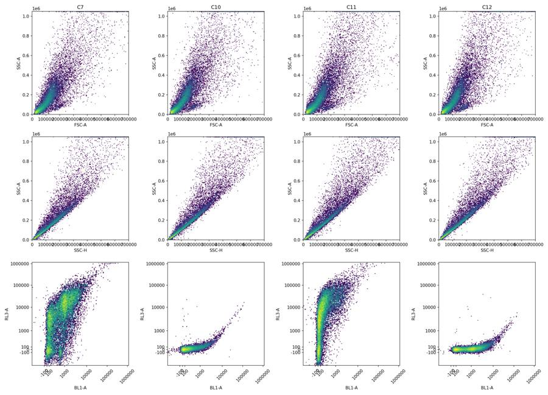
tool call · exec
const results=await Promise.allSettled([
tools.view_image({path:"/task/outputs/initial_scatter_all.png"}),
tools.view_image({path:"/task/outputs/initial_event_rate_all.png"}),
]); for (const r of results) {if(r.status==="fulfilled") image(r.value.image_url); else text(r);}
tool output
Script completed Wall time 0.1 seconds Output:
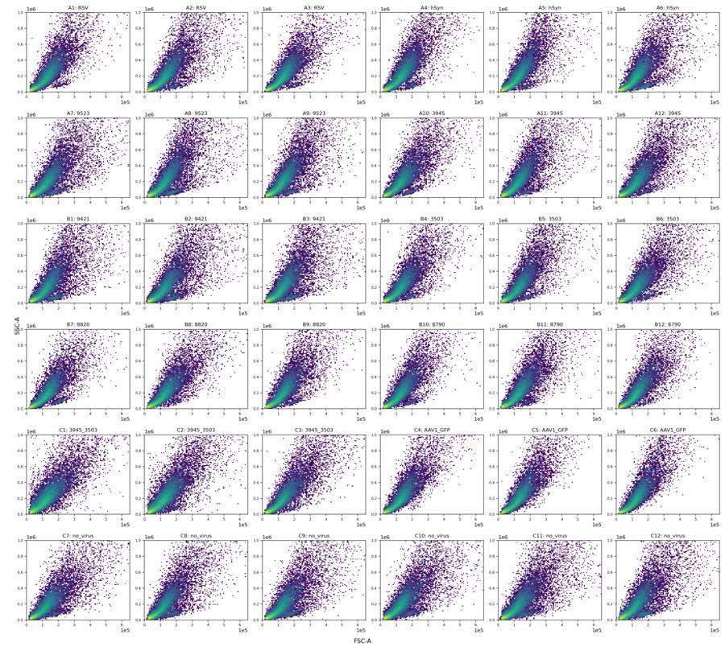
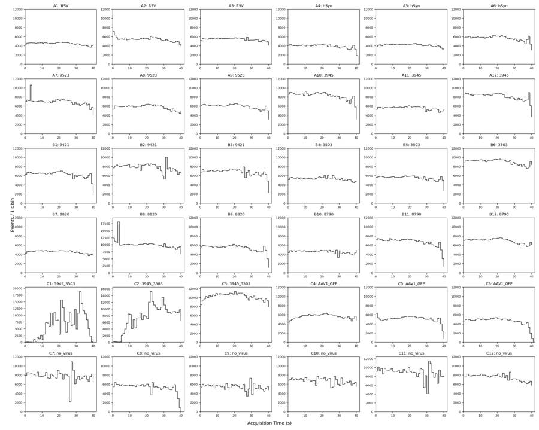
tool call · exec
text(await tools.exec_command({cmd:"cat > /task/outputs/gate_config.json <<'JSON'\n{\n \"logicle\": {\"param_t\":1048576,\"param_w\":0.5,\"param_m\":4.5,\"param_a\":0},\n \"cells_vertices_raw\": [[50000,20000],[200000,20000],[1000000,300000],[1000000,1048000],[200000,1048000],[50000,180000]],\n \"singlets_vertices_raw\": [[10000,7000],[100000,65000],[800000,720000],[950000,1048000],[650000,1048000],[100000,160000],[10000,25000]],\n \"live_rl3_max_raw\": 1000,\n \"late_rl3_min_raw\": 3000,\n \"caspase_bl1_min_raw\": 1500,\n \"late_upper_raw\": 2000000\n}\nJSON\ncat > /task/outputs/build_gates.py <<'PY'\n\"\"\"Build one shared FlowKit 1.2.3 strategy from explicit saved coordinates.\"\"\"\nfrom pathlib import Path\nimport json\nimport flowkit as fk\nimport numpy as np\nOUT=Path(__file__).resolve().parent\nPOPULATIONS=['Cells','Single_Cells','Live','Caspase_pos','Late_apoptosis']\nPARENTS=['All_events','Cells','Single_Cells','Live','Single_Cells']\nPATHS=[('root',),('root','Cells'),('root','Cells','Single_Cells'),('root','Cells','Single_Cells','Live'),('root','Cells','Single_Cells')]\ndef build():\n p=json.loads((OUT/'gate_config.json').read_text())\n gs=fk.GatingStrategy()\n tr=fk.transforms.LogicleTransform(**p['logicle'])\n gs.add_transform('Fluorescence_Logicle',tr)\n def dim(c,**kwargs):\n return fk.Dimension(c,compensation_ref='uncompensated',**kwargs)\n def fd(c,lo=None,hi=None):\n return dim(c,transformation_ref='Fluorescence_Logicle',range_min=None if lo is None else float(tr.apply(np.array([lo],float))[0]),range_max=None if hi is None else float(tr.apply(np.array([hi],float))[0]))\n gs.add_gate(fk.gates.PolygonGate('Cells',[dim('FSC-A'),dim('SSC-A')],p['cells_vertices_raw']),PATHS[0])\n gs.add_gate(fk.gates.PolygonGate('Single_Cells',[dim('SSC-H'),dim('SSC-A')],p['singlets_vertices_raw']),PATHS[1])\n gs.add_gate(fk.gates.RectangleGate('Live',[fd('BL1-A'),fd('RL3-A',hi=p['live_rl3_max_raw'])]),PATHS[2])\n gs.add_gate(fk.gates.RectangleGate('Caspase_pos',[fd('BL1-A',lo=p['caspase_bl1_min_raw']),fd('RL3-A',hi=p['live_rl3_max_raw'])]),PATHS[3])\n x=p['caspase_bl1_min_raw'];y=p['late_rl3_min_raw'];m=p['late_upper_raw']\n vertices=tr.apply(np.array([[x,y],[m,y],[m,m],[x,m]],float)).tolist()\n gs.add_gate(fk.gates.PolygonGate('Late_apoptosis',[fd('BL1-A'),fd('RL3-A')],vertices),PATHS[4])\n return gs\nif __name__=='__main__':\n gs=build()\n with (OUT/'gates.xml').open('wb') as handle:\n fk.export_gatingml(gs,handle)\n parsed=fk.parse_gating_xml(str(OUT/'gates.xml'))\n assert parsed.get_gate_ids()==gs.get_gate_ids()\n print('Saved and reloaded',OUT/'gates.xml',gs.get_gate_ids())\nPY\npython /task/outputs/build_gates.py","max_output_tokens":2000}));
tool output
Script completed
Wall time 1.3 seconds
Output:
{"chunk_id":"d1d102","wall_time_seconds":1.127112074,"exit_code":0,"original_token_count":66,"output":"Saved and reloaded /task/outputs/gates.xml [('Cells', ('root',)), ('Single_Cells', ('root', 'Cells')), ('Live', ('root', 'Cells', 'Single_Cells')), ('Caspase_pos', ('root', 'Cells', 'Single_Cells', 'Live')), ('Late_apoptosis', ('root', 'Cells', 'Single_Cells'))]\n"}13
agent
The initial `gates.xml` is saved and reloads successfully. C1 and C2 show substantial flow irregularities. I’m checking whether those disruptions change the sampled populations, and refining the fluorescence thresholds using C10–C12.
tool call · exec
text(await tools.exec_command({cmd:"cat > /task/outputs/analyze_plate.py <<'PY'\n\"\"\"Gate every well with the exported/reloaded strategy; compute full-data QC.\"\"\"\nfrom pathlib import Path\nimport json\nimport numpy as np\nimport pandas as pd\nimport flowkit as fk\nfrom build_gates import POPULATIONS,PARENTS,PATHS\nOUT=Path(__file__).resolve().parent\nRAW=Path('/task/inputs/raw')\nlayout=pd.read_csv('/task/inputs/plate_layout.csv')\ngs=fk.parse_gating_xml(str(OUT/'gates.xml'))\nrows=[];qc=[];time_rows=[];quants=[];arrays={};hists=[]\nrng=np.random.default_rng(2030417)\ntr=gs.get_transform('Fluorescence_Logicle')\nfl_bins=np.linspace(-.2,1.02,350)\nfor row in layout.itertuples():\n s=fk.Sample(str(RAW/row.file))\n a=s.get_events(source='raw');ch={x:i for i,x in enumerate(s.pnn_labels)}\n res=gs.gate_sample(s)\n masks={'All_events':np.ones(len(a),dtype=bool)}\n for pop,par,path in zip(POPULATIONS,PARENTS,PATHS):\n masks[pop]=res.get_gate_membership(pop,path)\n count=res.get_gate_count(pop,path)\n assert count==int(masks[pop].sum())\n assert not np.any(masks[pop]&~masks[par])\n parentcount=int(masks[par].sum())\n rows.append({'file':row.file,'well':row.well,'population':pop,'count':count,'parent_population':par,'pct_of_parent':100*count/parentcount if parentcount else 0.0})\n for name in ['All_events','Cells','Single_Cells','Live']:\n ids=np.flatnonzero(masks[name]);select=rng.choice(ids,min(len(ids),25000),replace=False)\n arrays[f'{row.well}_{name}']=a[select].astype(np.float32)\n r={'well':row.well,'file':row.file,'n_all':len(a),'n_cells':int(masks['Cells'].sum()),'n_singlets':int(masks['Single_Cells'].sum()),'n_live':int(masks['Live'].sum()),'duration_s':np.ptp(a[:,0]),'time_decreases':int((np.diff(a[:,0])<0).sum()),'max_gap_s':np.diff(a[:,0]).max()}\n for pop in ['All_events','Cells','Single_Cells','Live']:\n b=a[masks[pop]]\n for c in ['FSC-A','SSC-A','SSC-H','BL1-A','RL3-A']:\n x=b[:,ch[c]]\n r[f'{pop}_{c}_sat_pct']=100*np.mean(x>=1048575)\n r[f'{pop}_{c}_negative_pct']=100*np.mean(x<0)\n for q,v in zip([0,.01,.05,.25,.5,.75,.9,.95,.99,.995,.999,1],np.quantile(x,[0,.01,.05,.25,.5,.75,.9,.95,.99,.995,.999,1])):\n quants.append({'well':row.well,'population':pop,'channel':c,'quantile':q,'value':v})\n if pop in ['Single_Cells','Live']:\n for c in ['BL1-A','RL3-A']:\n x=b[:,ch[c]]\n for threshold in [100,300,500,750,1000,1250,1500,2000,2500,3000,4000,5000,10000]:\n r[f'{pop}_{c}_ge{threshold}_pct']=100*np.mean(x>=threshold)\n h,_=np.histogram(tr.apply(x),bins=fl_bins)\n for lo,hi,n in zip(fl_bins[:-1],fl_bins[1:],h):\n hists.append({'well':row.well,'population':pop,'channel':c,'bin_left':lo,'bin_right':hi,'n':n})\n qc.append(r)\n t=a[:,0]\n for left in np.arange(0,np.ceil(t.max()),1):\n sel=(t>=left)&(t<left+1)\n duration=max(0,min(t.max(),left+1)-max(t.min(),left))\n d={'well':row.well,'time_start_s':left,'bin_exposure_s':duration,'All_events':int(sel.sum()),'events_per_s':sel.sum()/duration if duration else 0}\n for pop in POPULATIONS:\n d[pop]=int((sel&masks[pop]).sum())\n for pop in ['All_events','Single_Cells','Live']:\n gsel=sel&masks[pop]\n for c in ['FSC-A','SSC-A','SSC-H','BL1-A','RL3-A']:\n d[f'{pop}_{c}_median']=np.median(a[gsel,ch[c]]) if gsel.any() else np.nan\n time_rows.append(d)\n print(row.well, {k:int(v.sum()) for k,v in masks.items()},flush=True)\npd.DataFrame(rows).to_csv(OUT/'counts.csv',index=False)\npd.DataFrame(qc).to_csv(OUT/'gated_qc.csv',index=False)\npd.DataFrame(time_rows).to_csv(OUT/'gated_time_qc.csv',index=False)\npd.DataFrame(quants).to_csv(OUT/'gated_quantiles.csv',index=False)\npd.DataFrame(hists).to_csv(OUT/'fluorescence_histograms.csv',index=False)\nnp.savez_compressed(OUT/'gated_subsamples.npz',**arrays)\n(OUT/'analysis_status.json').write_text(json.dumps({'flowkit_version':fk.__version__,'files':len(layout),'counts_rows':len(rows),'strategy_source':'gates.xml','full_events':True},indent=2))\nPY\nOPENBLAS_NUM_THREADS=1 python /task/outputs/analyze_plate.py","yield_time_ms":1000,"max_output_tokens":2000}));
tool output
Script completed
Wall time 1.2 seconds
Output:
{"chunk_id":"1d27b8","wall_time_seconds":1.001272326,"session_id":12570,"original_token_count":0,"output":""}tool call · exec
text(await tools.exec_command({cmd:"cat > /task/outputs/plot_morphology.py <<'PY'\nfrom pathlib import Path\nimport json\nimport numpy as np\nimport matplotlib\nmatplotlib.use('Agg')\nimport matplotlib.pyplot as plt\nfrom matplotlib.colors import LogNorm\nimport flowkit as fk\nfrom scipy.ndimage import gaussian_filter1d\nOUT=Path(__file__).resolve().parent\np=json.loads((OUT/'gate_config.json').read_text())\ndata=np.load(OUT/'display_subsamples.npz')\ntr=fk.transforms.LogicleTransform(1048576,0.5,4.5,0)\nfig,axes=plt.subplots(3,4,figsize=(18,13))\nfor i,w in enumerate(['A1','B8','C10','C12']):\n a=data[w];x=a[:,1];y=a[:,2]\n for k,limits in enumerate([((10000,1048576),(5000,1048576)),((0,200000),(0,250000))]):\n ax=axes[k,i]\n if k==0:\n ax.hist2d(x,y,bins=[np.geomspace(*limits[0],180),np.geomspace(*limits[1],180)],norm=LogNorm(vmin=1));ax.set_xscale('log');ax.set_yscale('log')\n else:\n ax.hist2d(x,y,bins=160,range=limits,norm=LogNorm(vmin=1))\n v=np.array(p['cells_vertices_raw']+[p['cells_vertices_raw'][0]])\n ax.plot(v[:,0],v[:,1],c='r',lw=1);ax.set_xlim(limits[0]);ax.set_ylim(limits[1]);ax.set_xlabel('FSC-A');ax.set_ylabel('SSC-A');ax.set_title(w)\n r=y/np.maximum(a[:,6],1)\n ax=axes[2,i];sel=(x>50000)&(y>20000)&(y<1048000)\n ax.hist2d(a[sel,6],r[sel],bins=[np.geomspace(10000,1048576,180),np.linspace(.5,3,160)],norm=LogNorm(vmin=1));ax.set_xscale('log');ax.set_xlabel('SSC-H');ax.set_ylabel('SSC-A / SSC-H');ax.set_ylim(.5,3);ax.axhline(1.5,c='r',lw=1)\nfig.tight_layout();fig.savefig(OUT/'morphology_detail.png',dpi=150)\nPY\npython /task/outputs/plot_morphology.py","yield_time_ms":1000,"max_output_tokens":2000}));
text(await tools.exec_command({cmd:"python - <<'PY'\nimport pandas as pd,json\nm=json.load(open('/task/outputs/fcs_metadata.json'))\nfor k in ['date','p2v','p3v','p4v','p5v','#flowrate','timestep','spillover','#tr1','lost','vol']:\n print(k,{w:x.get(k) for w,x in m.items()} if len({x.get(k) for x in m.values()})>1 else list(m.values())[0].get(k))\nprint('Metadata mismatches',[(w,x.get('wellid')) for w,x in m.items() if x.get('wellid')!=w])\nPY","max_output_tokens":2000}));
tool output
Script completed
Wall time 1.5 seconds
Output:
{"chunk_id":"a25bbb","wall_time_seconds":1.000348828,"session_id":30005,"original_token_count":0,"output":""}
{"chunk_id":"7374f0","wall_time_seconds":0.212775125,"exit_code":0,"original_token_count":194,"output":"date 17-Apr-2023\np2v 30\np3v 300\np4v 250\np5v 300\n#flowrate 200\ntimestep 0.001\nspillover 2,BL1-A,RL3-A,1.000000,0.000000,0.000000,1.000000\n#tr1 OR_FSC,25000\nlost 0\nvol {'A1': '137000', 'A2': '137000', 'A3': '137000', 'A4': '137000', 'A5': '137000', 'A6': '137000', 'A7': '136000', 'A8': '137000', 'A9': '137000', 'A10': '136000', 'A11': '137000', 'A12': '137000', 'B1': '137000', 'B2': '137000', 'B3': '137000', 'B4': '137000', 'B5': '137000', 'B6': '137000', 'B7': '137000', 'B8': '136000', 'B9': '137000', 'B10': '137000', 'B11': '137000', 'B12': '136000', 'C1': '136000', 'C2': '137000', 'C3': '136000', 'C4': '137000', 'C5': '137000', 'C6': '137000', 'C7': '137000', 'C8': '137000', 'C9': '137000', 'C10': '136000', 'C11': '137000', 'C12': '137000'}\nMetadata mismatches []\n"}tool call · exec
text(await tools.write_stdin({session_id:30005,chars:"","yield_time_ms":1000,"max_output_tokens":1000}));
image((await tools.view_image({path:"/task/outputs/morphology_detail.png"})).image_url);
text(await tools.write_stdin({session_id:12570,chars:"","yield_time_ms":1000,"max_output_tokens":3000}));
tool output
Script completed Wall time 5.0 seconds Output:
{"chunk_id":"765075","wall_time_seconds":0.000002754,"exit_code":0,"original_token_count":0,"output":""}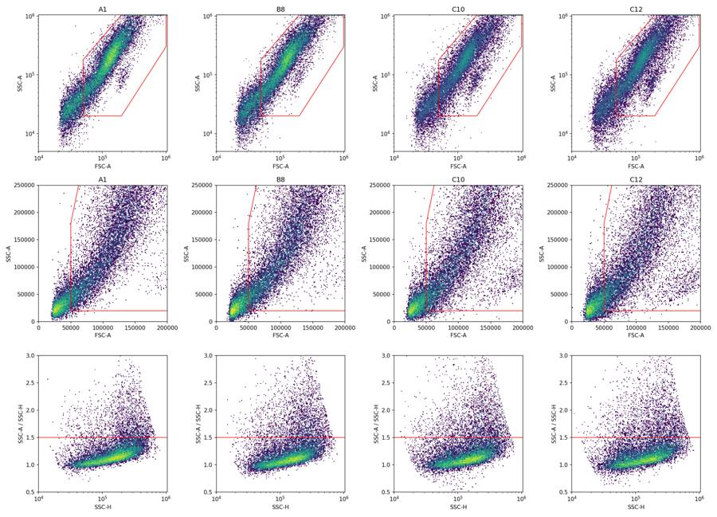
{"chunk_id":"948550","wall_time_seconds":5.001167056,"session_id":12570,"original_token_count":635,"output":"A1 {'All_events': 183353, 'Cells': 133648, 'Single_Cells': 122140, 'Live': 3193, 'Caspase_pos': 40, 'Late_apoptosis': 20914}\nA2 {'All_events': 221770, 'Cells': 160730, 'Single_Cells': 142862, 'Live': 8731, 'Caspase_pos': 225, 'Late_apoptosis': 25504}\nA3 {'All_events': 222545, 'Cells': 167195, 'Single_Cells': 152676, 'Live': 10607, 'Caspase_pos': 293, 'Late_apoptosis': 29795}\nA4 {'All_events': 160440, 'Cells': 121141, 'Single_Cells': 110561, 'Live': 5727, 'Caspase_pos': 85, 'Late_apoptosis': 20075}\nA5 {'All_events': 169911, 'Cells': 125378, 'Single_Cells': 115117, 'Live': 10021, 'Caspase_pos': 294, 'Late_apoptosis': 19086}\nA6 {'All_events': 230857, 'Cells': 172597, 'Single_Cells': 156416, 'Live': 13986, 'Caspase_pos': 324, 'Late_apoptosis': 29872}\nA7 {'All_events': 282723, 'Cells': 203722, 'Single_Cells': 177966, 'Live': 15190, 'Caspase_pos': 407, 'Late_apoptosis': 32227}\nA8 {'All_events': 236938, 'Cells': 173413, 'Single_Cells': 154084, 'Live': 20386, 'Caspase_pos': 779, 'Late_apoptosis': 30197}\nA9 {'All_events': 241833, 'Cells': 180777, 'Single_Cells': 161942, 'Live': 11583, 'Caspase_pos': 447, 'Late_apoptosis': 30284}\nA10 {'All_events': 335810, 'Cells': 245038, 'Single_Cells': 216505, 'Live': 11245, 'Caspase_pos': 171, 'Late_apoptosis': 42778}\nA11 {'All_events': 228556, 'Cells': 162141, 'Single_Cells': 147023, 'Live': 13344, 'Caspase_pos': 538, 'Late_apoptosis': 28966}\nA12 {'All_events': 330844, 'Cells': 236384, 'Single_Cells': 209630, 'Live': 15035, 'Caspase_pos': 590, 'Late_apoptosis': 41115}\nB1 {'All_events': 254845, 'Cells': 181215, 'Single_Cells': 161136, 'Live': 17563, 'Caspase_pos': 528, 'Late_apoptosis': 27616}\nB2 {'All_events': 319449, 'Cells': 225410, 'Single_Cells': 196590, 'Live': 34004, 'Caspase_pos': 1775, 'Late_apoptosis': 38563}\nB3 {'All_events': 275473, 'Cells': 199858, 'Single_Cells': 176076, 'Live': 25059, 'Caspase_pos': 1209, 'Late_apoptosis': 36159}\nB4 {'All_events': 219859, 'Cells': 156027, 'Single_Cells': 141145, 'Live': 8284, 'Caspase_pos': 175, 'Late_apoptosis': 23444}\nB5 {'All_events': 225148, 'Cells': 159660, 'Single_Cells': 144846, 'Live': 12441, 'Caspase_pos': 401, 'Late_apoptosis': 25938}\nB6 {'All_events': 369018, 'Cells': 262588, 'Single_Cells': 230486, 'Live': 24056, 'Caspase_pos': 1207, 'Late_apoptosis': 49525}\nB7 {'All_events': 186946, 'Cells': 135760, 'Single_Cells': 124922, 'Live': 7947, 'Caspase_pos': 169, 'Late_apoptosis': 23101}\nB8 {'All_events': 412353, 'Cells': 298510, 'Single_Cells': 260813, 'Live': 21491, 'Caspase_pos': 600, 'Late_apoptosis': 48077}\n"}tool call · exec
image((await tools.view_image({path:"/task/outputs/initial_fluorescence_all.png"})).image_url);
text(await tools.clock__curr_time({}));
tool output
Script completed Wall time 0.1 seconds Output:
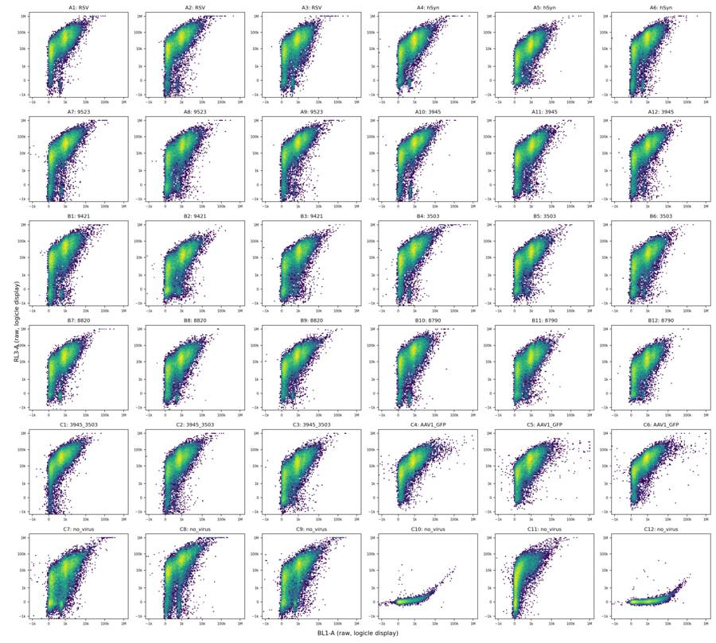
{"current_time":"2026-11-10 17:21:48 UTC"}tool call · exec
text(await tools.write_stdin({session_id:12570,chars:"","yield_time_ms":1000,"max_output_tokens":4000}));
text(await tools.exec_command({cmd:"ls -lh /task/outputs/gated_qc.csv /task/outputs/counts.csv /task/outputs/gated_subsamples.npz","max_output_tokens":2000}));
tool output
Script completed
Wall time 5.0 seconds
Output:
{"chunk_id":"18fd71","wall_time_seconds":5.001008305,"session_id":12570,"original_token_count":507,"output":"B9 {'All_events': 219409, 'Cells': 158530, 'Single_Cells': 143680, 'Live': 9195, 'Caspase_pos': 214, 'Late_apoptosis': 27917}\nB10 {'All_events': 187472, 'Cells': 134384, 'Single_Cells': 124131, 'Live': 6697, 'Caspase_pos': 146, 'Late_apoptosis': 20325}\nB11 {'All_events': 271438, 'Cells': 199156, 'Single_Cells': 179919, 'Live': 13987, 'Caspase_pos': 586, 'Late_apoptosis': 35332}\nB12 {'All_events': 286933, 'Cells': 210206, 'Single_Cells': 189876, 'Live': 15069, 'Caspase_pos': 527, 'Late_apoptosis': 36545}\nC1 {'All_events': 250794, 'Cells': 186158, 'Single_Cells': 159214, 'Live': 4660, 'Caspase_pos': 63, 'Late_apoptosis': 16026}\nC2 {'All_events': 305451, 'Cells': 228873, 'Single_Cells': 197991, 'Live': 11863, 'Caspase_pos': 502, 'Late_apoptosis': 28501}\nC3 {'All_events': 418796, 'Cells': 303780, 'Single_Cells': 260722, 'Live': 28242, 'Caspase_pos': 957, 'Late_apoptosis': 44652}\nC4 {'All_events': 230134, 'Cells': 170803, 'Single_Cells': 156000, 'Live': 4687, 'Caspase_pos': 103, 'Late_apoptosis': 28486}\nC5 {'All_events': 206789, 'Cells': 153753, 'Single_Cells': 140493, 'Live': 5485, 'Caspase_pos': 110, 'Late_apoptosis': 25803}\nC6 {'All_events': 189779, 'Cells': 140300, 'Single_Cells': 129815, 'Live': 3109, 'Caspase_pos': 89, 'Late_apoptosis': 25486}\nC7 {'All_events': 317865, 'Cells': 223562, 'Single_Cells': 190486, 'Live': 40180, 'Caspase_pos': 3496, 'Late_apoptosis': 38323}\nC8 {'All_events': 214991, 'Cells': 147724, 'Single_Cells': 130567, 'Live': 11751, 'Caspase_pos': 754, 'Late_apoptosis': 24743}\nC9 {'All_events': 222410, 'Cells': 154620, 'Single_Cells': 134276, 'Live': 22974, 'Caspase_pos': 1509, 'Late_apoptosis': 28247}\nC10 {'All_events': 276619, 'Cells': 197981, 'Single_Cells': 170626, 'Live': 170574, 'Caspase_pos': 5235, 'Late_apoptosis': 3}\nC11 {'All_events': 364071, 'Cells': 251077, 'Single_Cells': 209455, 'Live': 40401, 'Caspase_pos': 72, 'Late_apoptosis': 5994}\nC12 {'All_events': 307442, 'Cells': 217761, 'Single_Cells': 188030, 'Live': 187943, 'Caspase_pos': 45447, 'Late_apoptosis': 11}\n"}
{"chunk_id":"b2b8c9","wall_time_seconds":0.00000486,"exit_code":0,"original_token_count":52,"output":"-rw-r--r-- 1 root root 17K Nov 10 17:21 /task/outputs/counts.csv\n-rw-r--r-- 1 root root 49K Nov 10 17:21 /task/outputs/gated_qc.csv\n-rw-r--r-- 1 root root 24M Nov 10 17:22 /task/outputs/gated_subsamples.npz\n"}tool call · exec
text(await tools.exec_command({cmd:"python - <<'PY'\nimport pandas as pd\nq=pd.read_csv('/task/outputs/gated_qc.csv').set_index('well')\ncols=['n_singlets','n_live']+[f'{pop}_{ch}_ge{x}_pct' for pop,ch,x in [('Single_Cells','BL1-A',1000),('Single_Cells','BL1-A',1500),('Single_Cells','BL1-A',2000),('Single_Cells','BL1-A',2500),('Single_Cells','BL1-A',3000),('Single_Cells','BL1-A',5000),('Single_Cells','RL3-A',300),('Single_Cells','RL3-A',500),('Single_Cells','RL3-A',1000),('Single_Cells','RL3-A',1500),('Single_Cells','RL3-A',3000)]]\nprint(q.loc[['C7','C8','C9','C10','C11','C12'],cols].round(3).T.to_string())\nprint(pd.read_csv('/task/outputs/gated_quantiles.csv').query('well in [\"C10\", \"C11\", \"C12\"] and population==\"Single_Cells\" and channel in [\"BL1-A\",\"RL3-A\"] and quantile>=.9').pivot(index=['channel','quantile'],columns='well',values='value').round(1).to_string())\nPY","max_output_tokens":5000}));
text(await tools.exec_command({cmd:"cat > /task/outputs/plot_controls.py <<'PY'\nfrom pathlib import Path\nimport json\nimport numpy as np\nimport pandas as pd\nimport matplotlib\nmatplotlib.use('Agg')\nimport matplotlib.pyplot as plt\nfrom matplotlib.colors import LogNorm\nfrom scipy.ndimage import gaussian_filter1d\nimport flowkit as fk\nOUT=Path(__file__).resolve().parent\np=json.loads((OUT/'gate_config.json').read_text())\ntr=fk.transforms.LogicleTransform(**p['logicle'])\ndata=np.load(OUT/'gated_subsamples.npz')\nhist=pd.read_csv(OUT/'fluorescence_histograms.csv')\nfig,axes=plt.subplots(3,4,figsize=(19,13))\ncolors={'C7':'tab:purple','C8':'tab:pink','C9':'tab:cyan','C10':'black','C11':'tab:blue','C12':'tab:orange'}\nticks=np.array([-1000,-100,0,100,1000,10000,100000,1000000.]);loc=tr.apply(ticks);labels=['−1k','−100','0','100','1k','10k','100k','1M']\nfor i,w in enumerate(['C7','C10','C11','C12']):\n a=data[f'{w}_Single_Cells'];b=tr.apply(a[:,3:5].astype(float));ax=axes[0,i]\n ax.hist2d(b[:,0],b[:,1],bins=160,range=[(-.05,1.02),(-.05,1.02)],norm=LogNorm(vmin=1),cmap='viridis')\n ax.axvline(tr.apply(np.array([p['caspase_bl1_min_raw']],float))[0],c='red',lw=1)\n for t in ['live_rl3_max_raw','late_rl3_min_raw']:\n ax.axhline(tr.apply(np.array([p[t]],float))[0],c='red',lw=1,ls='--' if t.startswith('late') else '-')\n ax.set_title(w+' Single_Cells');ax.set_xticks(loc);ax.set_xticklabels(labels,rotation=45,fontsize=8);ax.set_yticks(loc);ax.set_yticklabels(labels,fontsize=8);ax.set_xlabel('BL1-A');ax.set_ylabel('RL3-A')\nfor i,(pop,ch) in enumerate([('Single_Cells','BL1-A'),('Live','BL1-A'),('Single_Cells','RL3-A'),('Live','RL3-A')]):\n for w in ['C10','C11','C12','C7','C8','C9']:\n d=hist[(hist.well==w)&(hist.population==pop)&(hist.channel==ch)]\n x=(d.bin_left+d.bin_right)/2;y=d.n/d.n.sum()\n for j in [1,2]:\n ax=axes[j,i];ax.plot(x,gaussian_filter1d(y,1),label=w,c=colors[w]);ax.set_xlim(-.05,.9);ax.set_title(pop+' '+ch);ax.set_xticks(loc);ax.set_xticklabels(labels,rotation=45);ax.set_ylabel('fraction per bin');ax.legend(fontsize=8)\n for j in [1,2]:\n ax=axes[j,i]\n for t in (['caspase_bl1_min_raw'] if ch=='BL1-A' else ['live_rl3_max_raw','late_rl3_min_raw']):\n ax.axvline(tr.apply(np.array([p[t]],float))[0],c='r',lw=1)\n axes[2,i].set_yscale('log');axes[2,i].set_ylim(.00001,.2)\nfig.tight_layout();fig.savefig(OUT/'control_thresholds.png',dpi=160);plt.close(fig)\nPY\npython /task/outputs/plot_controls.py","yield_time_ms":1000,"max_output_tokens":2000}));
tool output
Script completed
Wall time 1.5 seconds
Output:
{"chunk_id":"7e7ac3","wall_time_seconds":0.216312212,"exit_code":0,"original_token_count":518,"output":"well C7 C8 C9 C10 C11 C12\nn_singlets 190486.000 130567.000 134276.000 170626.000 209455.000 188030.000\nn_live 40180.000 11751.000 22974.000 170574.000 40401.000 187943.000\nSingle_Cells_BL1-A_ge1000_pct 44.548 39.749 45.512 7.428 6.953 49.489\nSingle_Cells_BL1-A_ge1500_pct 24.157 19.979 23.409 3.071 3.015 24.180\nSingle_Cells_BL1-A_ge2000_pct 14.601 11.341 14.461 1.185 1.198 15.066\nSingle_Cells_BL1-A_ge2500_pct 8.410 6.402 8.462 0.464 0.506 8.941\nSingle_Cells_BL1-A_ge3000_pct 5.165 3.763 5.164 0.195 0.211 5.291\nSingle_Cells_BL1-A_ge5000_pct 0.847 0.601 0.894 0.003 0.005 0.940\nSingle_Cells_RL3-A_ge300_pct 87.247 93.570 88.956 0.137 87.534 0.146\nSingle_Cells_RL3-A_ge500_pct 84.371 92.752 86.902 0.045 85.261 0.057\nSingle_Cells_RL3-A_ge1000_pct 78.907 91.000 82.890 0.030 80.711 0.046\nSingle_Cells_RL3-A_ge1500_pct 74.827 89.475 79.643 0.029 77.004 0.043\nSingle_Cells_RL3-A_ge3000_pct 65.983 85.617 72.451 0.022 67.930 0.035\nwell C10 C11 C12\nchannel quantile \nBL1-A 0.900 810.0 753.0 2396.1\n 0.950 1232.0 1207.0 3059.0\n 0.990 2096.0 2102.0 4911.0\n 0.995 2461.8 2507.7 5793.9\n 0.999 3390.2 3366.0 8279.9\n 1.000 16671.0 7062.0 68290.0\nRL3-A 0.900 105.0 33506.6 103.0\n 0.950 133.0 47978.1 130.0\n 0.990 196.0 85499.7 194.0\n 0.995 227.0 104082.4 224.9\n 0.999 321.0 150872.6 339.0\n 1.000 119588.0 304294.0 51406.0\n"}
{"chunk_id":"92f59c","wall_time_seconds":1.001177629,"session_id":90611,"original_token_count":0,"output":""}tool call · exec
text(await tools.write_stdin({session_id:90611,chars:"","yield_time_ms":1000,"max_output_tokens":1000}));
image((await tools.view_image({path:"/task/outputs/control_thresholds.png"})).image_url);
text(await tools.write_stdin({session_id:12570,chars:"","yield_time_ms":1000,"max_output_tokens":1000}));
tool output
Script completed Wall time 0.0 seconds Output:
{"chunk_id":"2c9e39","wall_time_seconds":0.000003827,"exit_code":0,"original_token_count":0,"output":""}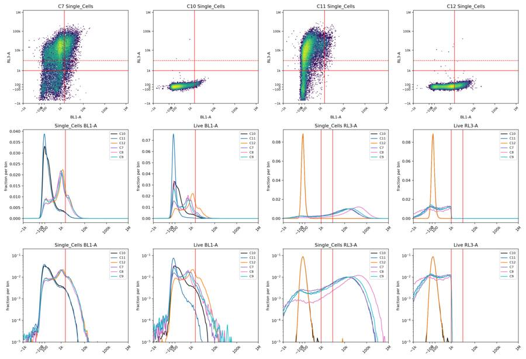
{"chunk_id":"4fa5a4","wall_time_seconds":0.000002897,"exit_code":0,"original_token_count":0,"output":""}20
agent
The controls show the expected staining patterns, but the caspase-negative and positive distributions overlap. I’m using a conservative BL1-A cutoff and will document that limitation. I’m also checking terminal rate drops against scatter changes to distinguish dry wells from ordinary flow fluctuations.
tool call · exec
text(await tools.exec_command({cmd:"cat > /task/outputs/inspect_flow.py <<'PY'\nfrom pathlib import Path\nimport numpy as np,pandas as pd\nimport matplotlib\nmatplotlib.use('Agg')\nimport matplotlib.pyplot as plt\nOUT=Path(__file__).resolve().parent\ndf=pd.read_csv(OUT/'gated_time_qc.csv')\nlayout=pd.read_csv('/task/inputs/plate_layout.csv')\nrows=[]\nfor row in layout.itertuples():\n d=df[df.well==row.well]\n ref=d[(d.time_start_s>=5)&(d.time_start_s<25)]\n full=d[(d.bin_exposure_s>.99)&(d.time_start_s<40)]\n base=ref.events_per_s.median()\n r={'well':row.well,'ref_rate':base,'min_full_rate':full.events_per_s.min(),'cv_full_rate':full.events_per_s.std()/full.events_per_s.mean(),'full_bins_lt25pct':int((full.events_per_s<base*.25).sum())}\n for tag,tmin,tmax in [('early',0,5),('mid',5,25),('tail',38,40),('end',40,42)]:\n w=d[(d.time_start_s>=tmin)&(d.time_start_s<tmax)]\n r[tag+'_rate_ratio']=w.All_events.sum()/w.bin_exposure_s.sum()/base\n r[tag+'_cell_pct']=100*w.Cells.sum()/w.All_events.sum()\n r[tag+'_singlet_pct']=100*w.Single_Cells.sum()/w.Cells.sum()\n r[tag+'_live_pct']=100*w.Live.sum()/w.Single_Cells.sum()\n r[tag+'_late_pct']=100*w.Late_apoptosis.sum()/w.Single_Cells.sum()\n r[tag+'_FSC_median']=w['All_events_FSC-A_median'].median()\n rows.append(r)\npd.DataFrame(rows).to_csv(OUT/'flow_window_summary.csv',index=False)\nfig,axes=plt.subplots(6,6,figsize=(21,17))\nfor ax,row in zip(axes.flat,layout.itertuples()):\n d=df[df.well==row.well];reference=d[(d.time_start_s>=5)&(d.time_start_s<25)]\n r=d.events_per_s/reference.events_per_s.median()\n ax.plot(d.time_start_s+.5,r,c='k',label='Rate / middle median',lw=1.2)\n ax.plot(d.time_start_s+.5,d['All_events_FSC-A_median']/reference['All_events_FSC-A_median'].median(),c='tab:blue',label='FSC median / middle median',lw=1)\n ax.plot(d.time_start_s+.5,d.Cells/d.All_events,c='tab:orange',label='Cells / all',lw=1)\n ax.set_ylim(0,min(max(2,r.max()*1.05),4));ax.set_title(row.well+': '+row.construct,fontsize=10);ax.tick_params(labelsize=8)\naxes[0,0].legend(fontsize=6)\nfig.supxlabel('Acquisition time (s)');fig.supylabel('Relative rate / FSC; cell fraction');fig.tight_layout();fig.savefig(OUT/'flow_and_morphology_all.png',dpi=160)\nfig,axes=plt.subplots(4,4,figsize=(19,15))\nfor ax,w in zip(axes.flat,['A4','A9','A10','B1','B3','B9','B11','C1','C2','C5','C6','C7','C8','C9','C10','C11']):\n d=df[df.well==w]\n for pop,par,c in [('Cells','All_events','tab:orange'),('Single_Cells','Cells','tab:blue'),('Live','Single_Cells','tab:green'),('Late_apoptosis','Single_Cells','tab:red')]:\n ax.plot(d.time_start_s+.5,100*d[pop]/d[par],label=pop,c=c)\n ax.set_ylim(0,100);ax.set_title(w);ax.tick_params(labelsize=8)\naxes[0,0].legend(fontsize=7)\nfig.supxlabel('Acquisition time (s)');fig.supylabel('Population % of parent');fig.tight_layout();fig.savefig(OUT/'time_phenotypes_detail.png',dpi=160)\nprint(pd.DataFrame(rows)[['well','ref_rate','early_rate_ratio','tail_rate_ratio','end_rate_ratio','mid_cell_pct','tail_cell_pct','end_cell_pct','mid_FSC_median','tail_FSC_median','end_FSC_median','cv_full_rate','full_bins_lt25pct']].round(3).to_string(index=False))\nPY\npython /task/outputs/inspect_flow.py","yield_time_ms":1000,"max_output_tokens":1000}));
text(await tools.exec_command({cmd:"python - <<'PY'\nimport pandas as pd,numpy as np\nfrom scipy.signal import find_peaks\nfrom scipy.ndimage import gaussian_filter1d\nimport flowkit as fk\nh=pd.read_csv('/task/outputs/fluorescence_histograms.csv');tr=fk.transforms.LogicleTransform(1048576,.5,4.5,0)\nfor w,ch in [('C11','RL3-A'),('C12','BL1-A'),('C10','BL1-A')]:\n d=h[(h.well==w)&(h.channel==ch)&(h.population=='Single_Cells')];x=((d.bin_left+d.bin_right)/2).values;y=gaussian_filter1d(d.n.values.astype(float),2);s=(x>tr.apply(np.array([0.]))[0])&(x<tr.apply(np.array([10000.]))[0])\n peaks,_=find_peaks(y[s],prominence=y.max()*.02);lows,_=find_peaks(-y[s],prominence=y.max()*.02)\n print(w,ch,'peaks_raw',tr.inverse(x[s][peaks]),'valleys_raw',tr.inverse(x[s][lows]))\nPY","max_output_tokens":2000}));
tool output
Script completed
Wall time 2.5 seconds
Output:
{"chunk_id":"082e32","wall_time_seconds":1.001153533,"session_id":25320,"original_token_count":0,"output":""}
{"chunk_id":"bd6aab","wall_time_seconds":1.131161316,"exit_code":0,"original_token_count":44,"output":"C11 RL3-A peaks_raw [] valleys_raw [281.80594077]\nC12 BL1-A peaks_raw [ 145.4753408 1134.33438836] valleys_raw [296.35849032]\nC10 BL1-A peaks_raw [94.1459258] valleys_raw []\n"}tool call · exec
text(await tools.write_stdin({session_id:25320,chars:"","yield_time_ms":1000,"max_output_tokens":6000}));
image((await tools.view_image({path:"/task/outputs/flow_and_morphology_all.png"})).image_url);
image((await tools.view_image({path:"/task/outputs/time_phenotypes_detail.png"})).image_url);
tool output
Script completed Wall time 0.1 seconds Output:
{"chunk_id":"f94ec1","wall_time_seconds":0.000003799,"exit_code":0,"original_token_count":1767,"output":"well ref_rate early_rate_ratio tail_rate_ratio end_rate_ratio mid_cell_pct tail_cell_pct end_cell_pct mid_FSC_median tail_FSC_median end_FSC_median cv_full_rate full_bins_lt25pct\n A1 4651.5 0.987 0.838 1.031 73.042 70.385 75.654 106603.00 96261.50 105591.5 0.060 0\n A2 5520.0 1.095 0.834 0.810 72.657 72.000 69.769 106645.75 103804.75 91232.0 0.070 0\n A3 5638.0 0.964 0.883 0.755 75.281 74.794 73.453 108374.00 104103.25 95867.0 0.045 0\n A4 4150.5 0.996 0.889 0.442 75.814 75.664 68.216 119164.50 112958.00 77682.5 0.079 0\n A5 4338.0 0.939 0.791 0.901 73.967 71.535 71.026 107095.50 99472.25 99335.5 0.058 0\n A6 5919.0 0.994 0.889 0.577 75.131 74.903 70.179 112407.00 110199.00 90653.0 0.079 0\n A7 7087.5 1.110 0.774 0.896 72.154 68.373 71.609 108369.50 96087.00 101050.0 0.111 0\n A8 6037.0 0.973 0.756 0.857 73.458 69.664 72.200 114172.00 103740.50 105895.0 0.085 0\n A9 6243.0 1.007 0.883 0.542 75.186 74.657 68.981 113848.50 111025.50 87821.0 0.078 0\n A10 8671.0 1.015 0.811 0.570 73.340 73.108 67.320 111132.25 106338.50 81599.0 0.085 0\n A11 5787.5 0.972 0.855 0.950 71.300 67.444 70.555 103908.00 90360.50 97937.0 0.063 0\n A12 8579.0 1.011 0.876 0.479 72.138 70.516 64.709 108619.25 100157.75 76497.0 0.078 0\n B1 6580.0 1.001 0.816 0.287 71.921 69.855 55.424 112267.75 98312.00 57764.0 0.085 0\n B2 8273.0 0.974 0.789 0.933 71.053 67.440 70.786 107585.50 93438.50 102368.5 0.107 0\n B3 7147.5 0.977 0.776 0.372 73.184 71.447 61.056 113941.00 101114.50 68281.0 0.087 0\n B4 5488.5 0.999 0.841 0.930 71.172 69.292 70.282 101533.50 96850.75 95723.5 0.061 0\n B5 5706.5 1.016 0.952 0.477 71.361 70.142 64.586 105434.00 101477.25 73794.0 0.061 0\n B6 9351.0 0.981 0.909 1.033 71.634 68.998 71.503 104257.50 92315.75 102027.5 0.058 0\n B7 4769.0 0.967 0.838 0.892 72.464 69.632 72.638 105780.50 97971.50 104904.5 0.062 0\n B8 10134.5 1.234 0.910 1.015 72.479 71.940 73.086 103768.00 100062.50 105484.5 0.144 0\n B9 5746.5 1.016 0.690 0.211 72.799 69.729 51.804 109889.50 92662.25 52981.0 0.111 0\n B10 4777.0 0.978 0.857 1.097 71.933 69.236 70.580 102659.00 91773.50 94444.0 0.073 0\n B11 7165.5 1.012 0.560 0.202 73.968 68.846 50.882 110708.00 90704.75 51251.5 0.123 0\n B12 7350.0 0.985 0.851 1.014 73.787 70.720 73.162 107369.50 93495.25 104301.0 0.072 0\n C1 6139.5 0.009 0.195 0.264 73.967 48.371 76.838 101086.75 40448.75 124724.5 0.773 9\n C2 7332.0 0.014 1.275 0.962 75.101 74.085 73.351 107030.50 109786.75 105560.0 0.490 4\n C3 10775.5 0.890 0.885 0.987 72.999 71.543 71.824 112427.50 104483.50 106087.0 0.058 0\n C4 5909.5 0.834 0.931 0.839 74.671 72.223 73.830 109781.00 98298.00 102915.5 0.073 0\n C5 5293.0 0.996 0.613 0.146 75.100 71.424 47.316 113489.75 93705.25 47415.0 0.112 0\n C6 5080.5 0.964 0.513 0.150 74.561 70.067 46.521 105714.75 87
… [1,211 more characters not shown]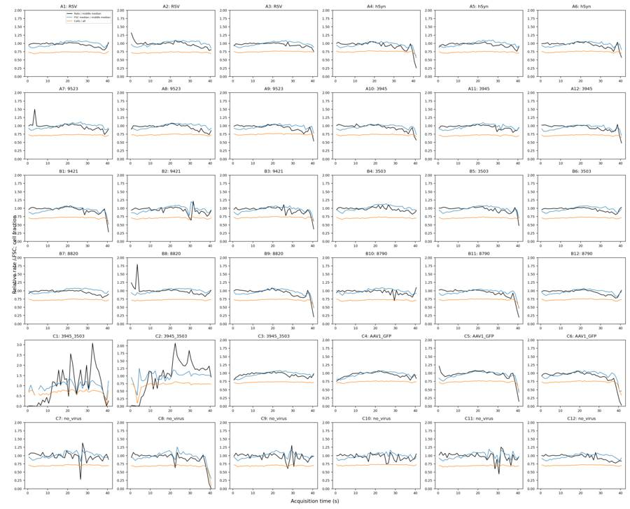
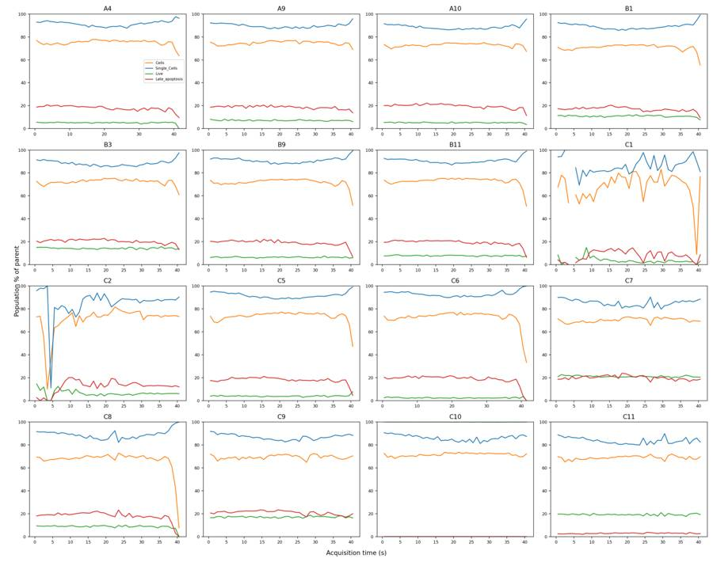
tool call · exec
text(await tools.exec_command({cmd:"python - <<'PY'\nfrom pathlib import Path\nimport json\np=Path('/task/outputs/gate_config.json')\nd=json.loads(p.read_text())\nd['singlets_vertices_raw']=[[10000,8000],[1048000,838400],[1048000,1048000],[698666.6666666666,1048000],[10000,15000]]\nd['live_rl3_max_raw']=300\nd['caspase_bl1_min_raw']=2200\np.write_text(json.dumps(d,indent=2)+'\\n')\nPY\npython /task/outputs/build_gates.py\nOPENBLAS_NUM_THREADS=1 python /task/outputs/analyze_plate.py","yield_time_ms":1000,"max_output_tokens":2000}));
text(await tools.exec_command({cmd:"cat > /task/outputs/fine_flow_qc.py <<'PY'\nfrom pathlib import Path\nimport numpy as np,pandas as pd,flowkit as fk\nimport matplotlib\nmatplotlib.use('Agg')\nimport matplotlib.pyplot as plt\nOUT=Path(__file__).resolve().parent;RAW=Path('/task/inputs/raw')\nlayout=pd.read_csv('/task/inputs/plate_layout.csv');rr=[];summary=[]\nfor row in layout.itertuples():\n s=fk.Sample(str(RAW/row.file));a=s.get_events(source='raw');t=a[:,0]\n reference=(t>=5)&(t<25);base=reference.sum()/20\n # Fixed 0.25 s bins with exact first/last exposure.\n for left in np.arange(0,np.ceil(t.max()*4)/4,.25):\n sel=(t>=left)&(t<left+.25);dur=min(left+.25,t.max())-max(left,t.min())\n if dur<=0:continue\n b=a[sel]\n rr.append({'well':row.well,'bin_start_s':left,'exposure_s':dur,'n':len(b),'rate_s':len(b)/dur,'rate_ratio':len(b)/dur/base,'fsc_median':np.median(b[:,1]) if len(b) else np.nan,'ssc_median':np.median(b[:,2]) if len(b) else np.nan,'bl1_median':np.median(b[:,3]) if len(b) else np.nan,'rl3_median':np.median(b[:,4]) if len(b) else np.nan,'low_fsc_pct':100*np.mean(b[:,1]<50000) if len(b) else np.nan})\n dt=np.diff(t);gi=np.argsort(dt)[-6:]\n ref_fsc=np.median(a[reference,1]);r={'well':row.well,'baseline_rate':base,'baseline_fsc':ref_fsc}\n for seconds in [1,2,3,5]:\n sel=t>=t.max()-seconds;b=a[sel];r[f'last{seconds}_rate_ratio']=sel.sum()/seconds/base;r[f'last{seconds}_fsc_ratio']=np.median(b[:,1])/ref_fsc;r[f'last{seconds}_n']=len(b)\n r['largest_gaps']='; '.join(f'{t[i]:.3f}-{t[i+1]:.3f}s ({dt[i]:.3f}s)' for i in gi[::-1])\n summary.append(r)\n print(row.well,flush=True)\ndf=pd.DataFrame(rr);df.to_csv(OUT/'fine_time_qc.csv',index=False);pd.DataFrame(summary).to_csv(OUT/'fine_flow_summary.csv',index=False)\nfig,axes=plt.subplots(6,6,figsize=(21,18))\nfor ax,row in zip(axes.flat,layout.itertuples()):\n d=df[(df.well==row.well)&(df.bin_start_s>=35)&(df.exposure_s>.1)];ref=pd.DataFrame(summary).set_index('well').loc[row.well,'baseline_fsc']\n ax.plot(d.bin_start_s+d.exposure_s/2,d.rate_ratio,c='k',label='Rate / 5–25 s mean');ax.plot(d.bin_start_s+d.exposure_s/2,d.fsc_median/ref,c='tab:blue',label='Median FSC / 5–25 s median');ax.axhline(.2,c='red',ls=':',lw=1);ax.set_ylim(0,1.6);ax.set_xlim(35,41.3);ax.set_title(row.well);ax.tick_params(labelsize=8)\naxes[0,0].legend(fontsize=7)\nfig.supxlabel('Time (s); 0.25 s bins (partial final bins exposure corrected)');fig.supylabel('Relative rate / FSC');fig.tight_layout();fig.savefig(OUT/'terminal_flow_detail.png',dpi=160)\nPY\nOPENBLAS_NUM_THREADS=1 python /task/outputs/fine_flow_qc.py","yield_time_ms":1000,"max_output_tokens":2000}));
tool output
Script completed
Wall time 2.3 seconds
Output:
{"chunk_id":"f8a688","wall_time_seconds":1.001131759,"session_id":89303,"original_token_count":66,"output":"Saved and reloaded /task/outputs/gates.xml [('Cells', ('root',)), ('Single_Cells', ('root', 'Cells')), ('Live', ('root', 'Cells', 'Single_Cells')), ('Caspase_pos', ('root', 'Cells', 'Single_Cells', 'Live')), ('Late_apoptosis', ('root', 'Cells', 'Single_Cells'))]\n"}
{"chunk_id":"cdfa49","wall_time_seconds":1.000842653,"session_id":33153,"original_token_count":0,"output":""}tool call · exec
text(await tools.write_stdin({session_id:33153,chars:"","yield_time_ms":1000,"max_output_tokens":1500}));
text(await tools.write_stdin({session_id:89303,chars:"","yield_time_ms":1000,"max_output_tokens":2000}));
text(await tools.clock__curr_time({}));
tool output
Script completed
Wall time 5.0 seconds
Output:
{"chunk_id":"02a2fd","wall_time_seconds":0.00000664,"exit_code":0,"original_token_count":30,"output":"A1\nA2\nA3\nA4\nA5\nA6\nA7\nA8\nA9\nA10\nA11\nA12\nB1\nB2\nB3\nB4\nB5\nB6\nB7\nB8\nB9\nB10\nB11\nB12\nC1\nC2\nC3\nC4\nC5\nC6\nC7\nC8\nC9\nC10\nC11\nC12\n"}
{"chunk_id":"4ecd63","wall_time_seconds":5.001073386,"session_id":89303,"original_token_count":1128,"output":"A1 {'All_events': 183353, 'Cells': 133648, 'Single_Cells': 117210, 'Live': 1861, 'Caspase_pos': 4, 'Late_apoptosis': 6834}\nA2 {'All_events': 221770, 'Cells': 160730, 'Single_Cells': 135951, 'Live': 6085, 'Caspase_pos': 36, 'Late_apoptosis': 9002}\nA3 {'All_events': 222545, 'Cells': 167195, 'Single_Cells': 146707, 'Live': 5640, 'Caspase_pos': 9, 'Late_apoptosis': 10764}\nA4 {'All_events': 160440, 'Cells': 121141, 'Single_Cells': 106140, 'Live': 3505, 'Caspase_pos': 8, 'Late_apoptosis': 6617}\nA5 {'All_events': 169911, 'Cells': 125378, 'Single_Cells': 110576, 'Live': 5838, 'Caspase_pos': 51, 'Late_apoptosis': 6229}\nA6 {'All_events': 230857, 'Cells': 172597, 'Single_Cells': 150101, 'Live': 10095, 'Caspase_pos': 65, 'Late_apoptosis': 10660}\nA7 {'All_events': 282723, 'Cells': 203722, 'Single_Cells': 168795, 'Live': 10750, 'Caspase_pos': 92, 'Late_apoptosis': 11698}\nA8 {'All_events': 236938, 'Cells': 173413, 'Single_Cells': 146396, 'Live': 14029, 'Caspase_pos': 161, 'Late_apoptosis': 11685}\nA9 {'All_events': 241833, 'Cells': 180777, 'Single_Cells': 154620, 'Live': 8447, 'Caspase_pos': 111, 'Late_apoptosis': 10490}\nA10 {'All_events': 335810, 'Cells': 245038, 'Single_Cells': 206215, 'Live': 7878, 'Caspase_pos': 40, 'Late_apoptosis': 15380}\nA11 {'All_events': 228556, 'Cells': 162141, 'Single_Cells': 140546, 'Live': 8715, 'Caspase_pos': 129, 'Late_apoptosis': 11094}\nA12 {'All_events': 330844, 'Cells': 236384, 'Single_Cells': 199670, 'Live': 9921, 'Caspase_pos': 163, 'Late_apoptosis': 15407}\nB1 {'All_events': 254845, 'Cells': 181215, 'Single_Cells': 153100, 'Live': 12219, 'Caspase_pos': 93, 'Late_apoptosis': 9631}\nB2 {'All_events': 319449, 'Cells': 225410, 'Single_Cells': 185826, 'Live': 21718, 'Caspase_pos': 366, 'Late_apoptosis': 15390}\nB3 {'All_events': 275473, 'Cells': 199858, 'Single_Cells': 167182, 'Live': 16798, 'Caspase_pos': 285, 'Late_apoptosis': 14324}\nB4 {'All_events': 219859, 'Cells': 156027, 'Single_Cells': 135148, 'Live': 5237, 'Caspase_pos': 27, 'Late_apoptosis': 7654}\nB5 {'All_events': 225148, 'Cells': 159660, 'Single_Cells': 138697, 'Live': 7611, 'Caspase_pos': 87, 'Late_apoptosis': 9139}\nB6 {'All_events': 369018, 'Cells': 262588, 'Single_Cells': 219027, 'Live': 13869, 'Caspase_pos': 155, 'Late_apoptosis': 20044}\nB7 {'All_events': 186946, 'Cells': 135760, 'Single_Cells': 120455, 'Live': 4664, 'Caspase_pos': 21, 'Late_apoptosis': 7818}\nB8 {'All_events': 412353, 'Cells': 298510, 'Single_Cells': 248207, 'Live': 10794, 'Caspase_pos': 88, 'Late_apoptosis': 16934}\nB9 {'All_events': 219409, 'Cells': 158530, 'Single_Cells': 137700, 'Live': 5594, 'Caspase_pos': 36, 'Late_apoptosis': 9679}\nB10 {'All_events': 187472, 'Cells': 134384, 'Single_Cells': 119528, 'Live': 4240, 'Caspase_pos': 26, 'Late_apoptosis': 6488}\nB11 {'All_events': 271438, 'Cells': 199156, 'Single_Cells': 172448, 'Live': 7938, 'Caspase_pos': 172, 'Late_apoptosis': 12692}\nB12 {'All_events': 286933, 'Cells': 210206, 'Single_Cells': 182323, 'Live': 7805, 'Caspase_pos': 106, 'Late_apoptosis': 12977}\nC1 {'All_events': 250794, 'Cells': 186158, 'Single_Cells': 151333, 'Live': 3059, 'Caspase_pos': 9, 'Late_apoptosis': 4461}\nC2 {'All_events': 305451, 'Cells': 228873, 'Single_Cells': 188354, 'Live': 7494, 'Caspase_pos': 181, 'Late_apoptosis': 8467}\nC3 {'All_events': 418796, 'Cells': 303780, 'Single_Cells': 246841, 'Live': 14883, 'Caspase_pos': 250, 'Late_apoptosis': 14922}\nC4 {'All_events': 230134, 'Cells': 170803, 'Single_Cells': 150126, 'Live': 1963, 'Caspase_pos': 16, 'Late_apoptosis': 9868}\nC5 {'All_events': 206789, 'Cells': 153753, 'Single_Cells': 135373, 'Live': 2211, 'Caspase_pos': 15, 'Late_apoptosis': 8536}\nC6 {'All_events': 189779, 'Cells': 140300, 'Single_Cells': 125454, 'Live': 1441, 'Caspase_pos': 9, 'Late_apoptosis': 9172}\nC7 {'All_events': 317865, 'Cells': 223562, 'Single_Cells': 179020, 'Live': 22897, 'Caspase_pos': 343, 'Late_apoptosis': 15798}\nC8 {'All_events': 214991, 'Cells': 147724, 'Single_Cells': 123847, 'Live': 7936, 'Caspase_pos': 206, 'Late_apoptosis': 9291}\nC9 {'All_events': 222410, 'Cells': 154620, 'Single_Cells': 126781, 'Live': 13804, 'Caspase_pos': 362, 'Late_apoptosis': 12224}\nC10 {'All_events': 276619, 'Cells': 197981, 'Single_Cells': 161167, 'Live': 160988, 'Caspase_pos': 979, 'Late_apoptosis': 1}\nC11 {'All_events': 364071, 'Cells': 251077, 'Single_Cells': 195259, 'Live': 24106, 'Caspase_pos': 3, 'Late_apoptosis': 1269}\nC12 {'All_events': 307442, 'Cells': 217761, 'Single_Cells': 177273, 'Live': 177064, 'Caspase_pos': 19376, 'Late_apoptosis': 5}\n"}
{"current_time":"2026-11-10 17:25:59 UTC"}tool call · exec
image((await tools.view_image({path:"/task/outputs/terminal_flow_detail.png"})).image_url);
text(await tools.exec_command({cmd:"python - <<'PY'\nimport pandas as pd\nx=pd.read_csv('/task/outputs/fine_flow_summary.csv')\nprint(x[['well','last1_rate_ratio','last1_fsc_ratio','last2_rate_ratio','last2_fsc_ratio','last3_rate_ratio','last3_fsc_ratio']].round(3).to_string(index=False))\nf=pd.read_csv('/task/outputs/fine_time_qc.csv')\nfor w,g in f.groupby('well',sort=False):\n d=g[(g.bin_start_s>=35)&(g.exposure_s>.1)]\n bad=d[(d.rate_ratio<.25)&(d.fsc_median<.65*x.set_index('well').loc[w,'baseline_fsc'])]\n if len(bad): print(w,'bad_tail',bad[['bin_start_s','exposure_s','rate_ratio','fsc_median']].round(3).to_dict('records'))\nPY","max_output_tokens":5000}));
tool output
Script completed Wall time 0.4 seconds Output:
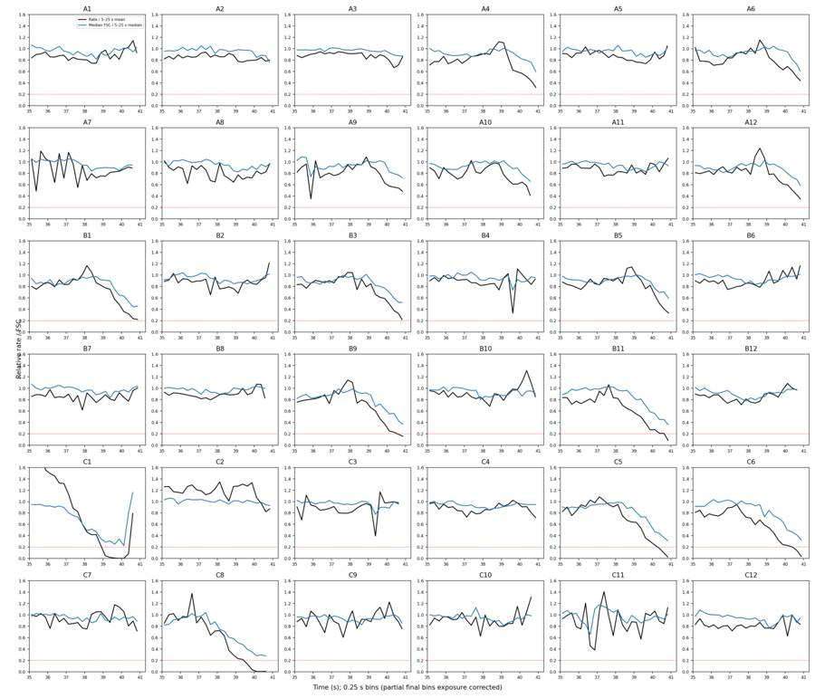
{"chunk_id":"d888e5","wall_time_seconds":0.222496412,"exit_code":0,"original_token_count":1723,"output":"well last1_rate_ratio last1_fsc_ratio last2_rate_ratio last2_fsc_ratio last3_rate_ratio last3_fsc_ratio\n A1 1.024 0.992 0.954 0.970 0.897 0.943\n A2 0.809 0.861 0.794 0.919 0.825 0.935\n A3 0.758 0.892 0.815 0.928 0.841 0.947\n A4 0.429 0.735 0.607 0.880 0.737 0.915\n A5 0.903 0.919 0.825 0.903 0.829 0.931\n A6 0.571 0.833 0.675 0.936 0.792 0.952\n A7 0.877 0.920 0.820 0.903 0.798 0.908\n A8 0.832 0.922 0.782 0.896 0.791 0.916\n A9 0.546 0.791 0.690 0.923 0.782 0.941\n A10 0.580 0.782 0.695 0.896 0.759 0.934\n A11 0.937 0.953 0.897 0.912 0.881 0.909\n A12 0.495 0.736 0.614 0.858 0.761 0.904\n B1 0.287 0.524 0.473 0.701 0.643 0.837\n B2 0.936 0.947 0.884 0.911 0.843 0.902\n B3 0.401 0.635 0.536 0.774 0.679 0.863\n B4 0.939 0.917 0.879 0.930 0.861 0.930\n B5 0.473 0.703 0.674 0.855 0.788 0.907\n B6 1.047 0.984 1.000 0.951 0.941 0.923\n B7 0.897 0.996 0.874 0.963 0.860 0.955\n B8 0.983 1.015 0.949 0.998 0.921 0.973\n B9 0.215 0.493 0.379 0.666 0.539 0.819\n B10 1.108 0.921 1.009 0.922 0.938 0.908\n B11 0.207 0.472 0.330 0.630 0.457 0.798\n B12 1.001 0.974 0.952 0.942 0.894 0.909\n C1 0.198 1.127 0.142 0.803 0.257 0.592\n C2 0.955 0.968 1.125 0.987 1.150 0.994\n C3 0.986 0.941 0.926 0.934 0.903 0.945\n C4 0.849 0.950 0.907 0.944 0.899 0.921\n C5 0.158 0.451 0.324 0.645 0.478 0.819\n C6 0.151 0.452 0.266 0.634 0.391 0.773\n C7 0.899 0.937 0.962 0.933 0.952 0.925\n C8 0.010 0.310 0.107 0.480 0.267 0.626\n C9 0.984 0.973 0.986 0.950 0.954 0.922\n C10 1.079 0.965 0.949 0.924 0.910 0.924\n C11 0.954 0.957 0.909 0.938 0.895 0.949\n C12 0.843 0.941 0.846 0.897 0.827 0.903\nB1 bad_tail [{'bin_start_s': 40.5, 'exposure_s': 0.25, 'rate_ratio': 0.235, 'fsc_median': 48867.0}, {'bin_start_s': 40.75, 'exposure_s': 0.232, 'rate_ratio': 0.222, 'fsc_median': 50480.0}]\nB3 bad_tail [{'bin_start_s': 40.75, 'exposure_s': 0.126, 'rate_ratio': 0.22, 'fsc_median': 58695.0}]\nB9 bad_tail [{'bin_start_s': 40.25, 'exposure_s': 0.25, 'rate_ratio': 0.23, 'fsc_median': 61143.0}, {'bin_start_s': 40.5, 'exposure_s': 0.25, 'rate_ratio': 0.191, 'fsc_median': 46825.0}, {'bin_start_s': 40.75, 'exposure_s': 0.212, 'rate_ratio': 0.158, 'fsc_median': 40320.0}]\nB11 bad_tail [{'bin_start_s': 40.25, 'exposure_s': 0.25, 'rate_ratio': 0.211, 'fsc_median': 49327.0}, {'bin_start_s': 40.5, 'exposure_s': 0.25, 'rate_ratio': 0.209, 'fsc_median': 49015.0}, {'bin_start_s': 40.75, 'exposure_s': 0.19, 'rate_ratio': 0.086, 'fsc_median': 39276.0}]\nC1 bad_tail [{'bin_start_s': 38.75, 'exposure_s': 0.25, 'rate_ratio': 0.228, 'fsc_median': 38455.0}, {'bin_start_s': 39.0, 'exposure_s': 0.25, 'rate_ratio': 0.046, 'fsc_median': 31483.0}, {'bin_start_s': 39.25, 'exposure_s': 0.25, 'rate_ratio': 0.019, 'fsc_median': 34083.0}, {'bin_start_s': 39.5, 'exposure_s': 0.25, 'rate_ratio': 0.007, 'fsc_median': 27443.0}, {'bin_start_s': 39.75, 'exposure_s': 0.25, 'rate_ratio': 0.003, 'fsc_median': 37640.0}, {'bin_start_s': 40.0, 'exposure_s': 0.25, 'rate_ratio': 0.004, 'fsc_median': 24797.5}]\nC5 bad_tail [{'bin_start_s': 40.0, 'exposure_s': 0.25, 'rate_ratio': 0.237, 'fsc_median': 52719.0}, {'bin_start_s': 40.25, 'exposure_s': 0.25, 'rate_ratio': 0.178, 'fsc_median': 49567.0}, {'bin_start_s': 40.5, 'exposure_s': 0.25, 'rate_ratio': 0.096, 'fsc_median': 41170.0}, {'bin_start_s': 40.75, 'exposure_s': 0.164, 'rate_ratio': 0.026, 'fsc_median': 34937.0}]\nC6 bad_tail [{'bin_start_s': 39.75, '
… [1,042 more characters not shown]25
agent
The shared gates are finalized and saved. Counts now come from reloading `gates.xml` and gating every event. C1–C2 have severe flow disruptions; several other wells show terminal drops in both event rate and scatter. I’ll also flag the GFP wells for caspase interpretation, because BL1-A cannot distinguish GFP from CellEvent there.
tool call · exec
text(await tools.write_stdin({session_id:89303,chars:"","yield_time_ms":1000,"max_output_tokens":1000}));
text(await tools.exec_command({cmd:"cat > /task/outputs/final_plots.py <<'PY'\nfrom pathlib import Path\nimport json\nimport numpy as np,pandas as pd,flowkit as fk\nimport matplotlib\nmatplotlib.use('Agg')\nimport matplotlib.pyplot as plt\nfrom matplotlib.colors import LogNorm\nOUT=Path(__file__).resolve().parent\np=json.loads((OUT/'gate_config.json').read_text());data=np.load(OUT/'gated_subsamples.npz');layout=pd.read_csv('/task/inputs/plate_layout.csv');counts=pd.read_csv(OUT/'counts.csv')\ntr=fk.transforms.LogicleTransform(**p['logicle'])\nfor tag,pop,x,y,vertices in [('cells','All_events',1,2,p['cells_vertices_raw']),('singlets','Cells',6,2,p['singlets_vertices_raw'])]:\n fig,axes=plt.subplots(6,6,figsize=(21,19))\n v=np.array(vertices+[vertices[0]])\n for ax,row in zip(axes.flat,layout.itertuples()):\n a=data[f'{row.well}_{pop}'];ax.hist2d(a[:,x],a[:,y],bins=140,range=[(0,1050000),(0,1050000)],norm=LogNorm(vmin=1),cmap='viridis');ax.plot(v[:,0],v[:,1],c='red',lw=1)\n n=counts[(counts.well==row.well)&(counts.population==('Cells' if tag=='cells' else 'Single_Cells'))].iloc[0]\n ax.set_title(f'{row.well}: {row.construct}\\n{n[\"count\"]:,} ({n.pct_of_parent:.1f}% of parent)',fontsize=9);ax.ticklabel_format(axis='both',style='sci',scilimits=(0,0));ax.tick_params(labelsize=7);ax.set_xlim(0,1050000);ax.set_ylim(0,1050000)\n fig.supxlabel('FSC-A' if tag=='cells' else 'SSC-H');fig.supylabel('SSC-A');fig.suptitle(f'{\"Cells\" if tag==\"cells\" else \"Single_Cells\"}: fixed polygon, raw values; reproducible display subsample only',fontsize=14);fig.tight_layout();fig.savefig(OUT/f'final_{tag}_all.png',dpi=160);plt.close(fig)\nfig,axes=plt.subplots(6,6,figsize=(22,20))\nticks=np.array([-1000,0,1000,10000,100000,1000000.]);loc=tr.apply(ticks);labels=['−1k','0','1k','10k','100k','1M']\nbl=tr.apply(np.array([p['caspase_bl1_min_raw']],float))[0];lv=tr.apply(np.array([p['live_rl3_max_raw']],float))[0];lt=tr.apply(np.array([p['late_rl3_min_raw']],float))[0]\nfor ax,row in zip(axes.flat,layout.itertuples()):\n a=data[f'{row.well}_Single_Cells'];b=tr.apply(a[:,3:5].astype(float));ax.hist2d(b[:,0],b[:,1],bins=125,range=[(-.12,1.02),(-.12,1.02)],norm=LogNorm(vmin=1),cmap='viridis')\n ax.axhline(lv,c='cyan',lw=1);ax.plot([bl,bl],[-.12,lv],c='red',lw=1);ax.plot([bl,bl,1.02],[1.02,lt,lt],c='red',lw=1)\n c=counts[counts.well==row.well].set_index('population')\n ax.set_title(f'{row.well}: {row.construct}\\nLive {c.loc[\"Live\",\"pct_of_parent\"]:.1f}% | Casp {c.loc[\"Caspase_pos\",\"pct_of_parent\"]:.2f}% of Live | Late {c.loc[\"Late_apoptosis\",\"pct_of_parent\"]:.1f}%',fontsize=8.7)\n ax.set_xticks(loc);ax.set_xticklabels(labels,fontsize=7);ax.set_yticks(loc);ax.set_yticklabels(labels,fontsize=7)\nfig.supxlabel('BL1-A: CellEvent (plus GFP in C4–C6), raw values on logicle display');fig.supylabel('RL3-A: Zombie NIR, raw values on logicle display');fig.suptitle('Fixed fluorescence gates within Single_Cells; cyan: Live upper edge; red: Caspase_pos and Late_apoptosis',fontsize=14);fig.tight_layout();fig.savefig(OUT/'final_fluorescence_all.png',dpi=160);plt.close(fig)\n# A compact high-resolution control review with all five gate shapes.\nfig,axes=plt.subplots(3,4,figsize=(18,13))\nfor i,w in enumerate(['C7','C10','C11','C12']):\n for j,pop,x in [(0,'All_events',1),(1,'Cells',6)]:\n a=data[f'{w}_{pop}'];ax=axes[j,i];ax.hist2d(a[:,x],a[:,2],bins=180,range=[(0,1050000),(0,1050000)],norm=LogNorm(vmin=1));v=np.array(p['cells_vertices_raw'] if j==0 else p['singlets_vertices_raw']);v=np.vstack([v,v[0]]);ax.plot(v[:,0],v[:,1],c='r',lw=1);ax.set_xlim(0,1050000);ax.set_ylim(0,1050000);ax.set_xlabel('FSC-A' if j==0 else 'SSC-H');ax.set_ylabel('SSC-A');ax.set_title(w+': '+('Cells' if j==0 else 'Single_Cells'))\n a=data[f'{w}_Single_Cells'];b=tr.apply(a[:,3:5].astype(float));ax=axes[2,i];ax.hist2d(b[:,0],b[:,1],bins=160,range=[(-.12,1.02),(-.12,1.02)],norm=LogNorm(vmin=1));ax.axhline(lv,c='cyan',lw=1);ax.plot([bl,bl],[-.12,lv],c='r',lw=1);ax.plot([bl,bl,1.02],[1.02,lt,lt],c='r',lw=1);ax.set_xticks(loc);ax.set_xticklabels(labels,fontsize=9);ax.set_yticks(loc);ax.set_yticklabels(labels,fontsize=9);ax.set_xlabel('BL1-A');ax.set_ylabel('RL3-A');ax.set_title(w+': fluorescence within Single_Cells')\nfig.tight_layout();fig.savefig(OUT/'final_control_review.png',dpi=160)\nPY\npython /task/outputs/final_plots.py\npython /task/outputs/plot_controls.py\npython /task/outputs/inspect_flow.py","yield_time_ms":1000,"max_output_tokens":1000}));
text(await tools.exec_command({cmd:"python - <<'PY'\nimport pandas as pd\nx=pd.read_csv('/task/outputs/gated_qc.csv').set_index('well');c=pd.read_csv('/task/outputs/counts.csv')\nprint(c[c.well.isin(['C7','C8','C9','C10','C11','C12'])].to_string(index=False))\nprint('Final singlets',x.n_singlets.min(),x.n_singlets.max(),'Live',x.n_live.min(),x.n_live.max())\nf=pd.read_csv('/task/outputs/fine_flow_summary.csv');print('Dry rule',f[(f.last1_rate_ratio<.5)&(f.last1_fsc_ratio<.65)][['well','last1_rate_ratio','last1_fsc_ratio']].to_string(index=False))\nPY","max_output_tokens":6000}));
tool output
Script completed
Wall time 1.5 seconds
Output:
{"chunk_id":"f39118","wall_time_seconds":0.000003257,"exit_code":0,"original_token_count":0,"output":""}
{"chunk_id":"8a9ccf","wall_time_seconds":1.001218796,"session_id":3923,"original_token_count":0,"output":""}
{"chunk_id":"d6c50e","wall_time_seconds":0.185964224,"exit_code":0,"original_token_count":916,"output":" file well population count parent_population pct_of_parent\n Caspase_KO_RNAswap-rep2_caspase_Group_C7.fcs C7 Cells 223562 All_events 70.332374\n Caspase_KO_RNAswap-rep2_caspase_Group_C7.fcs C7 Single_Cells 179020 Cells 80.076220\n Caspase_KO_RNAswap-rep2_caspase_Group_C7.fcs C7 Live 22897 Single_Cells 12.790191\n Caspase_KO_RNAswap-rep2_caspase_Group_C7.fcs C7 Caspase_pos 343 Live 1.498013\n Caspase_KO_RNAswap-rep2_caspase_Group_C7.fcs C7 Late_apoptosis 15798 Single_Cells 8.824712\n Caspase_KO_RNAswap-rep2_caspase_Group_C8.fcs C8 Cells 147724 All_events 68.711714\n Caspase_KO_RNAswap-rep2_caspase_Group_C8.fcs C8 Single_Cells 123847 Cells 83.836750\n Caspase_KO_RNAswap-rep2_caspase_Group_C8.fcs C8 Live 7936 Single_Cells 6.407907\n Caspase_KO_RNAswap-rep2_caspase_Group_C8.fcs C8 Caspase_pos 206 Live 2.595766\n Caspase_KO_RNAswap-rep2_caspase_Group_C8.fcs C8 Late_apoptosis 9291 Single_Cells 7.501998\n Caspase_KO_RNAswap-rep2_caspase_Group_C9.fcs C9 Cells 154620 All_events 69.520255\n Caspase_KO_RNAswap-rep2_caspase_Group_C9.fcs C9 Single_Cells 126781 Cells 81.995214\n Caspase_KO_RNAswap-rep2_caspase_Group_C9.fcs C9 Live 13804 Single_Cells 10.888067\n Caspase_KO_RNAswap-rep2_caspase_Group_C9.fcs C9 Caspase_pos 362 Live 2.622428\n Caspase_KO_RNAswap-rep2_caspase_Group_C9.fcs C9 Late_apoptosis 12224 Single_Cells 9.641823\nCaspase_KO_RNAswap-rep2_caspase_Group_C10.fcs C10 Cells 197981 All_events 71.571729\nCaspase_KO_RNAswap-rep2_caspase_Group_C10.fcs C10 Single_Cells 161167 Cells 81.405286\nCaspase_KO_RNAswap-rep2_caspase_Group_C10.fcs C10 Live 160988 Single_Cells 99.888935\nCaspase_KO_RNAswap-rep2_caspase_Group_C10.fcs C10 Caspase_pos 979 Live 0.608120\nCaspase_KO_RNAswap-rep2_caspase_Group_C10.fcs C10 Late_apoptosis 1 Single_Cells 0.000620\nCaspase_KO_RNAswap-rep2_caspase_Group_C11.fcs C11 Cells 251077 All_events 68.963746\nCaspase_KO_RNAswap-rep2_caspase_Group_C11.fcs C11 Single_Cells 195259 Cells 77.768573\nCaspase_KO_RNAswap-rep2_caspase_Group_C11.fcs C11 Live 24106 Single_Cells 12.345654\nCaspase_KO_RNAswap-rep2_caspase_Group_C11.fcs C11 Caspase_pos 3 Live 0.012445\nCaspase_KO_RNAswap-rep2_caspase_Group_C11.fcs C11 Late_apoptosis 1269 Single_Cells 0.649906\nCaspase_KO_RNAswap-rep2_caspase_Group_C12.fcs C12 Cells 217761 All_events 70.829945\nCaspase_KO_RNAswap-rep2_caspase_Group_C12.fcs C12 Single_Cells 177273 Cells 81.407139\nCaspase_KO_RNAswap-rep2_caspase_Group_C12.fcs C12 Live 177064 Single_Cells 99.882103\nCaspase_KO_RNAswap-rep2_caspase_Group_C12.fcs C12 Caspase_pos 19376 Live 10.942936\nCaspase_KO_RNAswap-rep2_caspase_Group_C12.fcs C12 Late_apoptosis 5 Single_Cells 0.002821\nFinal singlets 106140 248207 Live 1441 177064\nDry rule well last1_rate_ratio last1_fsc_ratio\n B1 0.286636 0.524260\n B3 0.401144 0.635154\n B9 0.214722 0.493450\n B11 0.206586 0.471914\n C5 0.157523 0.450501\n C6 0.150806 0.452435\n C8 0.010346 0.310123\n"}tool call · exec
text(await tools.exec_command({cmd:"python - <<'PY'\nimport pandas as pd\nq=pd.read_csv('/task/outputs/gated_quantiles.csv')\nprint(q.query('well in [\"C10\",\"C11\",\"C12\"] and population==\"Single_Cells\" and channel in [\"BL1-A\",\"RL3-A\"] and quantile>=.9').pivot(index=['channel','quantile'],columns='well',values='value').round(1).to_string())\nprint(pd.read_csv('/task/outputs/gated_qc.csv')[['well','Single_Cells_BL1-A_sat_pct','Single_Cells_RL3-A_sat_pct','Live_BL1-A_sat_pct']].to_string(index=False))\nprint(pd.read_csv('/task/outputs/fine_flow_summary.csv').query('well in [\"C1\",\"C2\",\"C7\",\"C9\"]')[['well','largest_gaps']].to_string(index=False))\nPY","max_output_tokens":4000}));
text(await tools.clock__curr_time({}));
tool output
Script completed
Wall time 0.4 seconds
Output:
{"chunk_id":"34462c","wall_time_seconds":0.207144297,"exit_code":0,"original_token_count":1103,"output":"well C10 C11 C12\nchannel quantile \nBL1-A 0.900 771.0 710.0 2284.0\n 0.950 1189.0 1163.0 2879.0\n 0.990 1992.0 1988.0 4544.0\n 0.995 2335.0 2348.7 5352.6\n 0.999 3201.8 3190.7 7500.7\n 1.000 8768.0 7062.0 68290.0\nRL3-A 0.900 102.0 32155.0 100.0\n 0.950 129.0 45845.1 125.0\n 0.990 188.0 81485.4 184.0\n 0.995 216.0 98879.5 214.0\n 0.999 307.0 144354.5 316.7\n 1.000 119588.0 304294.0 51406.0\nwell Single_Cells_BL1-A_sat_pct Single_Cells_RL3-A_sat_pct Live_BL1-A_sat_pct\n A1 0.0 0.0 0.0\n A2 0.0 0.0 0.0\n A3 0.0 0.0 0.0\n A4 0.0 0.0 0.0\n A5 0.0 0.0 0.0\n A6 0.0 0.0 0.0\n A7 0.0 0.0 0.0\n A8 0.0 0.0 0.0\n A9 0.0 0.0 0.0\n A10 0.0 0.0 0.0\n A11 0.0 0.0 0.0\n A12 0.0 0.0 0.0\n B1 0.0 0.0 0.0\n B2 0.0 0.0 0.0\n B3 0.0 0.0 0.0\n B4 0.0 0.0 0.0\n B5 0.0 0.0 0.0\n B6 0.0 0.0 0.0\n B7 0.0 0.0 0.0\n B8 0.0 0.0 0.0\n B9 0.0 0.0 0.0\n B10 0.0 0.0 0.0\n B11 0.0 0.0 0.0\n B12 0.0 0.0 0.0\n C1 0.0 0.0 0.0\n C2 0.0 0.0 0.0\n C3 0.0 0.0 0.0\n C4 0.0 0.0 0.0\n C5 0.0 0.0 0.0\n C6 0.0 0.0 0.0\n C7 0.0 0.0 0.0\n C8 0.0 0.0 0.0\n C9 0.0 0.0 0.0\n C10 0.0 0.0 0.0\n C11 0.0 0.0 0.0\n C12 0.0 0.0 0.0\nwell largest_gaps\n C1 3.748-5.033s (1.285s); 6.530-6.799s (0.269s); 11.664-11.819s (0.155s); 12.052-12.203s (0.151s); 8.181-8.312s (0.131s); 6.799-6.925s (0.126s)\n C2 3.313-3.724s (0.411s); 3.724-3.958s (0.234s); 4.252-4.450s (0.198s); 4.784-4.969s (0.185s); 4.488-4.661s (0.173s); 4.098-4.252s (0.154s)\n C7 26.540-26.879s (0.339s); 22.720-22.871s (0.151s); 18.352-18.451s (0.099s); 29.249-29.327s (0.078s); 29.424-29.492s (0.068s); 24.680-24.747s (0.067s)\n C9 27.514-27.851s (0.337s); 30.718-30.827s (0.109s); 24.898-24.993s (0.095s); 26.311-26.390s (0.079s); 22.273-22.352s (0.079s); 24.999-25.060s (0.061s)\n"}
{"current_time":"2026-11-10 17:28:10 UTC"}tool call · exec
text(await tools.exec_command({cmd:"python - <<'PY'\nimport pandas as pd\ns=pd.read_csv('/task/outputs/initial_qc.csv')\nprint(s[['well','FSC-A_negative_pct','SSC-A_negative_pct','FSC-H_zero_pct','SSC-H_zero_pct','Time_decreases' if 'Time_decreases' in s else 'time_decreases']].round(3).to_string(index=False))\nPY","max_output_tokens":2000}));
text(await tools.write_stdin({session_id:3923,chars:"","yield_time_ms":1000,"max_output_tokens":1000}));
tool output
Script completed
Wall time 0.4 seconds
Output:
{"chunk_id":"8af41a","wall_time_seconds":0.187773668,"exit_code":0,"original_token_count":861,"output":"well FSC-A_negative_pct SSC-A_negative_pct FSC-H_zero_pct SSC-H_zero_pct time_decreases\n A1 0.000 0.019 0.0 0.000 0\n A2 0.001 0.089 0.0 0.012 0\n A3 0.003 0.033 0.0 0.010 0\n A4 0.001 0.052 0.0 0.011 0\n A5 0.000 0.028 0.0 0.004 0\n A6 0.000 0.039 0.0 0.003 0\n A7 0.005 0.164 0.0 0.017 1\n A8 0.001 0.110 0.0 0.014 0\n A9 0.000 0.074 0.0 0.007 0\n A10 0.001 0.064 0.0 0.004 0\n A11 0.000 0.077 0.0 0.010 0\n A12 0.005 0.085 0.0 0.010 0\n B1 0.002 0.115 0.0 0.012 0\n B2 0.005 0.212 0.0 0.028 0\n B3 0.007 0.142 0.0 0.024 0\n B4 0.005 0.133 0.0 0.021 0\n B5 0.001 0.063 0.0 0.005 0\n B6 0.002 0.102 0.0 0.008 0\n B7 0.000 0.026 0.0 0.002 0\n B8 0.000 0.046 0.0 0.002 1\n B9 0.003 0.041 0.0 0.003 0\n B10 0.001 0.037 0.0 0.011 0\n B11 0.000 0.035 0.0 0.001 0\n B12 0.000 0.026 0.0 0.002 0\n C1 0.207 0.997 0.0 0.519 0\n C2 0.128 0.702 0.0 0.339 0\n C3 0.006 0.164 0.0 0.025 0\n C4 0.002 0.030 0.0 0.002 0\n C5 0.000 0.011 0.0 0.000 0\n C6 0.002 0.018 0.0 0.001 0\n C7 0.051 0.544 0.0 0.146 0\n C8 0.027 0.329 0.0 0.069 0\n C9 0.037 0.529 0.0 0.165 0\n C10 0.026 0.471 0.0 0.114 0\n C11 0.037 0.712 0.0 0.161 0\n C12 0.011 0.270 0.0 0.040 0\n"}
{"chunk_id":"7be987","wall_time_seconds":0.000002035,"exit_code":0,"original_token_count":1767,"output":"Warning: truncated output (original token count: 1767)\nTotal output lines: 37\n\nwell ref_rate early_rate_ratio tail_rate_ratio end_rate_ratio mid_cell_pct tail_cell_pct end_cell_pct mid_FSC_median tail_FSC_median end_FSC_median cv_full_rate full_bins_lt25pct\n A1 4651.5 0.987 0.838 1.031 73.042 70.385 75.654 106603.00 96261.50 105591.5 0.060 0\n A2 5520.0 1.095 0.834 0.810 72.657 72.000 69.769 106645.75 103804.75 91232.0 0.070 0\n A3 5638.0 0.964 0.883 0.755 75.281 74.794 73.453 108374.00 104103.25 95867.0 0.045 0\n A4 4150.5 0.996 0.889 0.442 75.814 75.664 68.216 119164.50 112958.00 77682.5 0.079 0\n A5 4338.0 0.939 0.791 0.901 73.967 71.535 71.026 107095.50 99472.25 99335.5 0.058 0\n A6 5919.0 0.994 0.889 0.577 75.131 74.903 70.179 112407.00 110199.00 90653.0 0.079 0\n A7 7087.5 1.110 0.774 0.896 72.154 68.373 71.609 108369.50 96087.00 101050.0 0.111 0\n A8 6037.0 0.973 0.756 0.857 73.458 69.664 72.200 114172.00 103740.50 105895.0 0.085 0\n A9 6243.0 1.007 0.883 0.542 75.186 74.657 68.981 113848.50 111025.50 87821.0 0.078 0\n A10 8671.0 1.015 0.811 0.570 73.340 73…767 tokens truncated… 73.351 107030.50 109786.75 105560.0 0.490 4\n C3 10775.5 0.890 0.885
… [1,865 more characters not shown]tool call · exec
text(await tools.exec_command({cmd:"python - <<'PY'\nimport flowkit as fk,numpy as np,pandas as pd\nfor w in ['A7','B8']:\n s=fk.Sample(f'/task/inputs/raw/Caspase_KO_RNAswap-rep2_caspase_Group_{w}.fcs')\n a=s.get_events(source='raw');t=a[:,0];idx=np.flatnonzero(np.diff(t)<0)\n for i in idx:\n print('\\n',w,'nonmonotonic index',i,'jump',t[i],t[i+1],t[i+1]-t[i]);print(pd.DataFrame(a[max(0,i-8):i+10],columns=s.pnn_labels).to_string(index=False))\n print('Range indexes0-50000 every1000',list(zip(range(0,min(50000,len(t)),1000),t[:50000:1000])))\n # exact repeated full rows (Time included), length appropriate to check for duplication.\n _,cnt=np.unique(a,axis=0,return_counts=True)\n print(w,'fully duplicate rows extra',np.sum(cnt-1),'max repeats',cnt.max())\nPY","max_output_tokens":5000}));
tool output
Script completed
Wall time 1.9 seconds
Output:
{"chunk_id":"73a413","wall_time_seconds":1.76631925,"exit_code":0,"original_token_count":1199,"output":"\n A7 nonmonotonic index 3637 jump 3.96 0.013000000000000001 -3.947\n Time FSC-A SSC-A BL1-A RL3-A FSC-H SSC-H FSC-W SSC-W\n3.959 130738.0 126789.0 968.0 29631.0 124139.0 118252.0 81.0 79.0\n3.959 192490.0 490650.0 4610.0 191854.0 138842.0 411865.0 92.0 98.0\n3.959 65750.0 297753.0 2317.0 43999.0 63215.0 293448.0 62.0 77.0\n3.959 24361.0 13599.0 13.0 1026.0 28341.0 17455.0 55.0 38.0\n3.959 131840.0 224813.0 1093.0 28407.0 117115.0 198210.0 84.0 89.0\n3.959 100366.0 151657.0 944.0 36516.0 89915.0 143146.0 90.0 82.0\n3.960 109880.0 100355.0 1155.0 24596.0 102763.0 95744.0 80.0 81.0\n3.960 116988.0 119795.0 700.0 18656.0 110060.0 112748.0 91.0 91.0\n3.960 28512.0 27754.0 -8.0 68.0 31680.0 29504.0 59.0 57.0\n0.013 21114.0 3627.0 229.0 3197.0 27620.0 9302.0 39.0 28.0\n0.013 50396.0 40686.0 133.0 5554.0 43473.0 37041.0 77.0 56.0\n0.013 114059.0 141371.0 1388.0 8375.0 105993.0 141100.0 80.0 79.0\n0.014 199032.0 74722.0 -54.0 -623.0 158409.0 65542.0 102.0 86.0\n0.014 132981.0 292344.0 1636.0 95636.0 106960.0 249925.0 87.0 95.0\n0.014 114660.0 184781.0 1093.0 6859.0 104613.0 165826.0 82.0 87.0\n0.014 53890.0 48781.0 282.0 12625.0 57497.0 51004.0 68.0 70.0\n0.015 27465.0 19020.0 36.0 3629.0 31346.0 21916.0 49.0 47.0\n0.015 143564.0 181060.0 1134.0 14282.0 122575.0 158253.0 91.0 92.0\nRange indexes0-50000 every1000 [(0, 3.414), (1000, 3.56), (2000, 3.709), (3000, 3.869), (4000, 0.063), (5000, 0.20700000000000002), (6000, 0.34700000000000003), (7000, 0.487), (8000, 0.619), (9000, 0.76), (10000, 0.903), (11000, 1.045), (12000, 1.182), (13000, 1.32), (14000, 1.455), (15000, 1.594), (16000, 1.728), (17000, 1.865), (18000, 2.005), (19000, 2.1470000000000002), (20000, 2.2800000000000002), (21000, 2.414), (22000, 2.5580000000000003), (23000, 2.689), (24000, 2.831), (25000, 2.979), (26000, 3.121), (27000, 3.257), (28000, 3.394), (29000, 3.543), (30000, 3.693), (31000, 3.8360000000000003), (32000, 3.979), (33000, 4.119), (34000, 4.264), (35000, 4.41), (36000, 4.555), (37000, 4.7010000000000005), (38000, 4.838), (39000, 4.97), (40000, 5.105), (41000, 5.252), (42000, 5.389), (43000, 5.551), (44000, 5.689), (45000, 5.832), (46000, 5.974), (47000, 6.117), (48000, 6.264), (49000, 6.4190000000000005)]\nA7 fully duplicate rows extra 0 max repeats 1\n\n B8 nonmonotonic index 8109 jump 3.9410000000000003 0.013000000000000001 -3.9280000000000004\n Time FSC-A SSC-A BL1-A RL3-A FSC-H SSC-H FSC-W SSC-W\n3.941 40137.0 28856.0 94.0 3651.0 41806.0 29174.0 72.0 68.0\n3.941 102394.0 106634.0 634.0 4669.0 98682.0 103262.0 78.0 81.0\n3.941 48746.0 41300.0 197.0 15920.0 54530.0 46000.0 61.0 51.0\n3.941 94416.0 79249.0 580.0 23198.0 92556.0 78633.0 78.0 76.0\n3.941 50215.0 37582.0 38.0 3555.0 51805.0 39212.0 70.0 68.0\n3.941 23964.0 26940.0 49.0 1975.0 27786.0 24093.0 49.0 57.0\n3.941 188171.0 216767.0 1301.0 18158.0 115148.0 128846.0 98.0 100.0\n3.941 31513.0 21369.0 112.0 7531.0 35556.0 25360.0 53.0 43.0\n3.941 44294.0 18280.0 215.0 572.0 46168.0 20004.0 74.0 48.0\n0.013 173406.0 334134.0 2416.0 6119.0 144371.0 280907.0 87.0 93.0\n0.013 26182.0 26358.0 -46.0 12817.0 31819.0 31838.0 43.0 43.0\n0.013 189647.0 276996.0 1388.0 33116.0 129308.0 209596.0 96.0 98.0\n0.013 60346.0 45527.0 222.0 62.0 64348.0 50215.0 57.0 51.0\n0.013 107572.0 155399.0 1001.0 24186.0 92676.0 142541.0 79.0 81.0\n0.014 120430.0 191420.0 976.0 2739.0 108236.0 175409.0 82.0 83.0\n0.014 91579.0 122428.0 1124.0 4795.0 79240.0 117416.0 81.0 77.0\n0.014 98198.0 118111.0 1088.0 15297.0 91520.0 109628.0 78.0 89.0\n0.014 123507.0 69931.0 1948.0 10831.0 64294.0 32737.0 164.0 160.0\nRange indexes0-50000 every1000 [(0, 3.395), (1000, 3.46), (2000, 3.5260000000000002), (3000, 3.592), (4000, 3.661), (5000, 3.728), (6000, 3.797), (7000, 3.864), (8000, 3.934), (9000, 0.078), (10000, 0.154), (11000, 0.228), (12000, 0.305), (13000, 0.383), (14000, 0.463), (15000, 0.544), (16000, 0.625), (17000, 0.707), (18000, 0.791), (19000, 0.874), (20000, 0.9560000000000001), (21000, 1.04), (22000, 1.124), (23000, 1.208), (24000, 1.294), (25000, 1.385), (26000, 1.474), (27000, 1.56), (28000, 1.6480000000000001), (29000, 1.737), (30000, 1.829), (31000, 1.921), (32000, 2.016), (33000, 2.105), (34000, 2.201), (35000, 2.2960000000000003), (36000, 2.3890000000000002), (37000, 2.481), (38000, 2.577), (39000, 2.668), (40000, 2.766), (41000, 2.861), (42000, 2.955), (43000, 3.055), (44000, 3.15), (45000, 3.248), (46000, 3.348), (47000, 3.4490000000000003), (48000, 3.545), (49000, 3.6510000000000002)]\nB8 fully duplicate rows extra 0 max repeats 1\n"}29
agent
I found two additional acquisition anomalies: A7 and B8 each contain a backward clock jump of about 3.9 seconds, creating overlapping time segments. I’m checking those segments before assigning their final QC flags.
tool call · exec
text(await tools.exec_command({cmd:"python - <<'PY'\nimport flowkit as fk,numpy as np,pandas as pd,json\nfrom pathlib import Path\nimport matplotlib\nmatplotlib.use('Agg')\nimport matplotlib.pyplot as plt\nout=Path('/task/outputs');fig,axes=plt.subplots(2,2,figsize=(13,8));records=[]\nfor j,(w,prev,nextw) in enumerate([('A7','A6','A8'),('B8','B7','B9')]):\n s=fk.Sample(f'/task/inputs/raw/Caspase_KO_RNAswap-rep2_caspase_Group_{w}.fcs');a=s.get_events(source='raw');t=a[:,0];i=np.flatnonzero(np.diff(t)<0)[0];prefix=a[:i+1];rest=a[i+1:]\n hp=pd.util.hash_pandas_object(pd.DataFrame(prefix[:,1:]),index=False).to_numpy()\n match={}\n for other,b in [(w,rest)]+[(z,fk.Sample(f'/task/inputs/raw/Caspase_KO_RNAswap-rep2_caspase_Group_{z}.fcs').get_events(source='raw')) for z in [prev,nextw]]:\n hb=pd.util.hash_pandas_object(pd.DataFrame(b[:,1:]),index=False).to_numpy();match[other]=int(np.isin(hp,hb).sum())\n r={'well':w,'reset_after_event_1_based':int(i+1),'prefix_start_s':float(t[0]),'before_reset_s':float(t[i]),'after_reset_s':float(t[i+1]),'backward_jump_s':float(t[i]-t[i+1]),'prefix_event_count':len(prefix),'prefix_pct_all_events':100*len(prefix)/len(a),'prefix_non_time_event_matches':match,'prefix_fsc_median':float(np.median(prefix[:,1])),'rest_fsc_median':float(np.median(rest[:,1])),'prefix_bl1_median':float(np.median(prefix[:,3])),'rest_bl1_median':float(np.median(rest[:,3])),'prefix_rl3_median':float(np.median(prefix[:,4])),'rest_rl3_median':float(np.median(rest[:,4]))};records.append(r)\n axes[j,0].plot(np.arange(min(60000,len(t))),t[:60000],lw=1);axes[j,0].axvline(i+1,c='r',ls='--');axes[j,0].set_title(w+' Time in acquisition order');axes[j,0].set_xlabel('Event index');axes[j,0].set_ylabel('Time (s)')\n axes[j,1].plot(np.arange(max(0,i-100),i+101),t[max(0,i-100):i+101],marker='.',ms=2,lw=.7);axes[j,1].set_title(f'{w}: reset {t[i]:.3f} → {t[i+1]:.3f} s');axes[j,1].set_xlabel('Event index');axes[j,1].set_ylabel('Time (s)')\nfig.tight_layout();fig.savefig(out/'clock_reset_review.png',dpi=160);(out/'clock_reset_qc.json').write_text(json.dumps(records,indent=2));print(json.dumps(records,indent=2))\nPY","yield_time_ms":1000,"max_output_tokens":2000}));
text(await tools.exec_command({cmd:"python - <<'PY'\nimport flowkit as fk, numpy as np\nfrom pathlib import Path\nx=fk.parse_gating_xml('/task/outputs/gates.xml')\nfor w in ['C10','C11','C12']:\n s=fk.Sample(f'/task/inputs/raw/Caspase_KO_RNAswap-rep2_caspase_Group_{w}.fcs');a=s.get_events(source='raw');r=x.gate_sample(s);m=r.get_gate_membership('Single_Cells',('root','Cells'));a=a[m]\n print(w,'BL1>=2200:',int((a[:,3]>=2200).sum()),'/',len(a),'=',100*np.mean(a[:,3]>=2200),'RL3>=3000:',100*np.mean(a[:,4]>=3000),'RL3<300:',100*np.mean(a[:,4]<300))\nPY","max_output_tokens":2000}));
tool output
Script completed
Wall time 3.6 seconds
Output:
{"chunk_id":"0bdff8","wall_time_seconds":1.001718846,"session_id":96989,"original_token_count":0,"output":""}
{"chunk_id":"e61265","wall_time_seconds":2.2698794270000002,"exit_code":0,"original_token_count":81,"output":"C10 BL1>=2200: 1067 / 161167 = 0.6620462005249214 RL3>=3000: 0.021716604515812792 RL3<300: 99.88893507976199\nC11 BL1>=2200: 1317 / 195259 = 0.6744887559600325 RL3>=3000: 67.871903471799 RL3<300: 12.345653721467384\nC12 BL1>=2200: 19488 / 177273 = 10.993213856594068 RL3>=3000: 0.03384610177522804 RL3<300: 99.88210274548295\n"}tool call · exec
text(await tools.write_stdin({session_id:96989,chars:"","yield_time_ms":1000,"max_output_tokens":3000}));
const rs = await Promise.allSettled([tools.view_image({path:"/task/outputs/final_control_review.png"}),tools.view_image({path:"/task/outputs/final_fluorescence_all.png"})]); for(const r of rs){if(r.status==="fulfilled")image(r.value.image_url);else text(r);}
tool output
Script completed Wall time 0.1 seconds Output:
{"chunk_id":"29c642","wall_time_seconds":0.000003469,"exit_code":0,"original_token_count":288,"output":"[\n {\n \"well\": \"A7\",\n \"reset_after_event_1_based\": 3638,\n \"prefix_start_s\": 3.414,\n \"before_reset_s\": 3.96,\n \"after_reset_s\": 0.013000000000000001,\n \"backward_jump_s\": 3.947,\n \"prefix_event_count\": 3638,\n \"prefix_pct_all_events\": 1.2867718579669853,\n \"prefix_non_time_event_matches\": {\n \"A7\": 0,\n \"A6\": 0,\n \"A8\": 0\n },\n \"prefix_fsc_median\": 101663.0,\n \"rest_fsc_median\": 107552.0,\n \"prefix_bl1_median\": 680.0,\n \"rest_bl1_median\": 691.0,\n \"prefix_rl3_median\": 14425.5,\n \"rest_rl3_median\": 16356.0\n },\n {\n \"well\": \"B8\",\n \"reset_after_event_1_based\": 8110,\n \"prefix_start_s\": 3.395,\n \"before_reset_s\": 3.9410000000000003,\n \"after_reset_s\": 0.013000000000000001,\n \"backward_jump_s\": 3.9280000000000004,\n \"prefix_event_count\": 8110,\n \"prefix_pct_all_events\": 1.9667614883364497,\n \"prefix_non_time_event_matches\": {\n \"B8\": 0,\n \"B7\": 0,\n \"B9\": 0\n },\n \"prefix_fsc_median\": 105679.5,\n \"rest_fsc_median\": 103014.0,\n \"prefix_bl1_median\": 730.0,\n \"rest_bl1_median\": 711.0,\n \"prefix_rl3_median\": 7928.0,\n \"rest_rl3_median\": 7669.0\n }\n]\n"}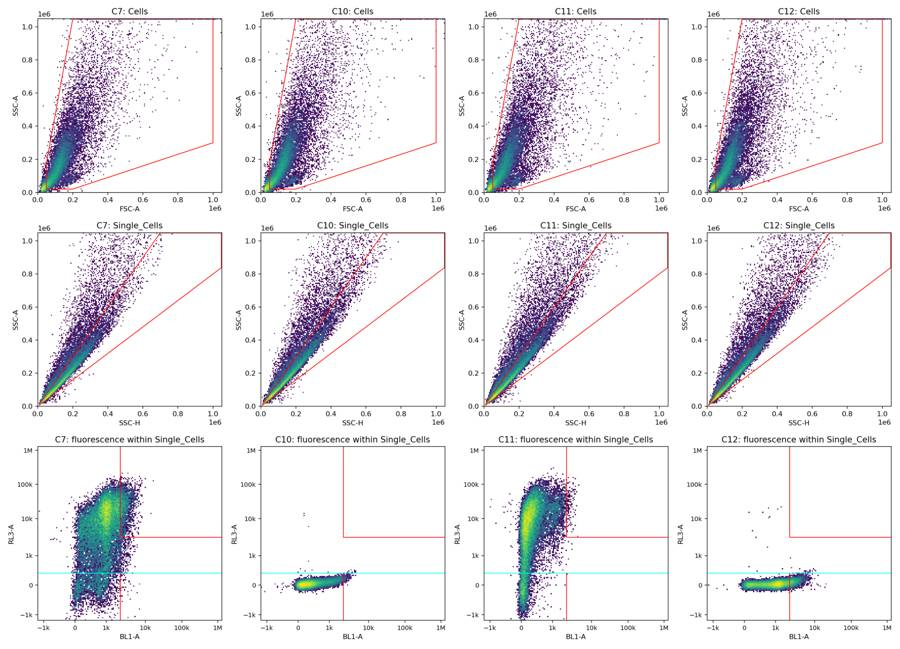
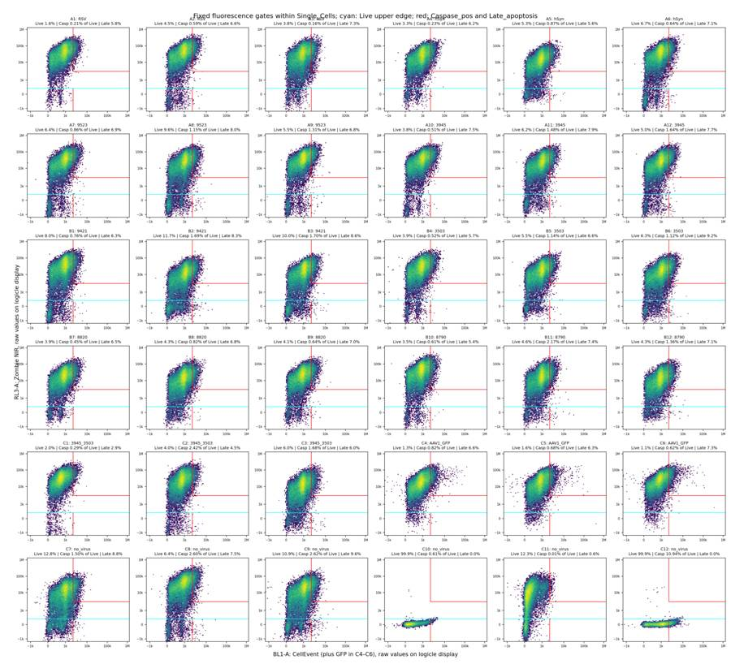
tool call · exec
text(await tools.exec_command({cmd:"cat > /task/outputs/make_flags.py <<'PY'\n\"\"\"Apply explicit plate-wide QC criteria; retain every well in counts.csv.\"\"\"\nfrom pathlib import Path\nimport json\nimport numpy as np,pandas as pd\nOUT=Path(__file__).resolve().parent\nlayout=pd.read_csv('/task/inputs/plate_layout.csv');counts=pd.read_csv(OUT/'counts.csv')\nq=pd.read_csv(OUT/'gated_qc.csv').set_index('well');raw=pd.read_csv(OUT/'initial_qc.csv').set_index('well')\nf=pd.read_csv(OUT/'fine_flow_summary.csv').set_index('well');t=pd.read_csv(OUT/'fine_time_qc.csv');windows=pd.read_csv(OUT/'flow_window_summary.csv').set_index('well')\nclock={r['well']:r for r in json.loads((OUT/'clock_reset_qc.json').read_text())}\nmeta=json.loads((OUT/'fcs_metadata.json').read_text());rows=[];summary=[]\nfor row in layout.itertuples():\n w=row.well;c=counts[counts.well==w].set_index('population');r=f.loc[w];g=t[t.well==w];first=g[g.bin_start_s<5]\n first_rate=first.n.sum()/first.exposure_s.sum();start_ratio=first_rate/r.baseline_rate\n dry=(r.last1_rate_ratio<.5) and (r.last1_fsc_ratio<.65)\n category='ok';ev=[]\n if w in clock:\n z=clock[w];category='clog_or_interrupted_flow'\n ev.append(f'Acquisition-clock discontinuity: after event {z[\"reset_after_event_1_based\"]}, Time resets {z[\"before_reset_s\"]:.3f} to {z[\"after_reset_s\"]:.3f} s (backward {z[\"backward_jump_s\"]:.3f} s). The first {z[\"prefix_event_count\"]} events ({z[\"prefix_pct_all_events\"]:.2f}% of the file) occupy an overlapping clock segment. Exclude conservatively because uninterrupted acquisition/segment provenance cannot be established; reset cause is unknown, not proven clogging. No identical fluorescence/scatter event vectors matched the remaining segment or adjacent wells.')\n elif start_ratio<.1 and windows.loc[w,'cv_full_rate']>.25:\n category='clog_or_interrupted_flow'\n ev.append(f'Severely interrupted/unstable acquisition: first 5 s contain {int(first.n.sum())} events, {first_rate:.1f}/s ({100*start_ratio:.2f}% of the 5-25 s reference rate {r.baseline_rate:.1f}/s); 1-s event-rate CV={windows.loc[w,\"cv_full_rate\"]:.2f}; longest inter-event gap={q.loc[w,\"max_gap_s\"]:.3f} s. Flow recovery is irregular; no time intervals were removed from counts.')\n elif dry:\n category='ran_dry'\n end_rate=r.last1_rate_ratio*r.baseline_rate;end_fsc=r.last1_fsc_ratio*r.baseline_fsc\n ev.append(f'Terminal depletion/ran-dry signature (inferred): final 1 s rate={end_rate:.0f}/s vs {r.baseline_rate:.0f}/s at 5-25 s ({100*r.last1_rate_ratio:.1f}%); median FSC-A={end_fsc:.0f} vs {r.baseline_fsc:.0f} ({100*r.last1_fsc_ratio:.1f}%). Both rejection criteria are met (rate <50% and FSC median <65% of reference), with progressive loss of scatter signal; the full file was retained for counting.')\n elif row.control_type=='transduction_gfp':\n category='other'\n if row.control_type=='transduction_gfp':\n cp=int(c.loc['Caspase_pos','count']);la=int(c.loc['Late_apoptosis','count'])\n ev.append(f'BL1-A has 2 inseparable sources (GFP plus CellEvent) and 0 independent channels resolving them. The {cp} Caspase_pos events ({c.loc[\"Caspase_pos\",\"pct_of_parent\"]:.3f}% of Live) and {la} Late_apoptosis events ({c.loc[\"Late_apoptosis\",\"pct_of_parent\"]:.3f}% of Single_Cells) are fluorescence-gate counts only, not identifiable apoptosis. Unusable for caspase endpoints; retain only as a qualified transduction reference.')\n if category=='ok':\n ev.append(f'{int(q.loc[w,\"n_all\"])} total events, {int(q.loc[w,\"n_singlets\"])} Single_Cells, {int(q.loc[w,\"n_live\"])} Live; final 1 s rate/reference={r.last1_rate_ratio:.3f}, FSC median/reference={r.last1_fsc_ratio:.3f} (reference 5-25 s); maximum gap={q.loc[w,\"max_gap_s\"]:.3f} s; 0 fluorescence-rail events in Single_Cells. No severe flow/count/control failure.')\n if (r.last1_rate_ratio<.65) or (r.last1_fsc_ratio<.8):\n ev.append('Terminal decline is present but does not meet the joint severe-depletion criterion.')\n if w in ['C7','C9']:\n ev.append(f'Brief flow pauses recover; Live={c.loc[\"Live\",\"pct_of_parent\"]:.2f}% and Late_apoptosis={c.loc[\"Late_apoptosis\",\"pct_of_parent\"]:.2f}% of Single_Cells. No sustained startup or terminal failure.')\n if row.control_type=='unstained':\n ev.append(f'Valid unstained control: {c.loc[\"Live\",\"pct_of_parent\"]:.3f}% of Single_Cells below RL3-A=300; Caspase_pos background={c.loc[\"Caspase_pos\",\"pct_of_parent\"]:.3f}% of Live. Use for gate placement, not a stained biological comparison.')\n elif row.control_type=='viability_dye_only':\n ev.append(f'Valid Zombie-only control: {c.loc[\"Live\",\"pct_of_parent\"]:.3f}% RL3-low and {q.loc[w,\"Single_Cells_RL3-A_ge3000_pct\"]:.3f}% RL3-bright among Single_Cells; BL1-positive background in Live={c.loc[\"Caspase_pos\",\"pct_of_parent\"]:.4f}%. Technical control only.')\n elif row.control_type=='caspase_dye_only':\n ev.append(f'Valid CellEvent-only control: {c.loc[\"Caspase_pos\",\"pct_of_parent\"]:.3f}% of Live above BL1-A=2200 versus 0.608% in unstained C10; {c.loc[\"Live\",\"pct_of_parent\"]:.3f}% RL3-low. Technical control only.')\n assert meta[w]['wellid']==w\n rows.append({'file':row.file,'well':w,'usable':'yes' if category=='ok' else 'no','reason_category':category,'evidence':' '.join(ev)})\n summary.append({'well':w,'all_events':int(q.loc[w,'n_all']),'cells':int(q.loc[w,'n_cells']),'single_cells':int(q.loc[w,'n_singlets']),'live':int(q.loc[w,'n_live']),'reference_rate_s':r.baseline_rate,'reference_fsc_median':r.baseline_fsc,'first5s_rate_fraction':start_ratio,'last1s_rate_fraction':r.last1_rate_ratio,'last1s_fsc_fraction':r.last1_fsc_ratio,'max_interevent_gap_s':q.loc[w,'max_gap_s'],'time_decreases':int(q.loc[w,'time_decreases']),'ssc_upper_rail_pct_all_events':raw.loc[w,'SSC-A_sat_pct'],'bl1_upper_rail_pct_all_events':raw.loc[w,'BL1-A_sat_pct'],'rl3_upper_rail_pct_all_events':raw.loc[w,'RL3-A_sat_pct'],'usable':rows[-1]['usable'],'reason_category':category})\nflags=pd.DataFrame(rows);flag
… [299 more characters not shown]tool output
Script completed
Wall time 0.4 seconds
Output:
{"chunk_id":"f2047e","wall_time_seconds":0.244389446,"exit_code":0,"original_token_count":360,"output":"well usable reason_category\n A1 yes ok\n A2 yes ok\n A3 yes ok\n A4 yes ok\n A5 yes ok\n A6 yes ok\n A7 no clog_or_interrupted_flow\n A8 yes ok\n A9 yes ok\n A10 yes ok\n A11 yes ok\n A12 yes ok\n B1 no ran_dry\n B2 yes ok\n B3 no ran_dry\n B4 yes ok\n B5 yes ok\n B6 yes ok\n B7 yes ok\n B8 no clog_or_interrupted_flow\n B9 no ran_dry\n B10 yes ok\n B11 no ran_dry\n B12 yes ok\n C1 no clog_or_interrupted_flow\n C2 no clog_or_interrupted_flow\n C3 yes ok\n C4 no other\n C5 no ran_dry\n C6 no ran_dry\n C7 yes ok\n C8 no ran_dry\n C9 yes ok\n C10 yes ok\n C11 yes ok\n C12 yes ok\n{'ok': 24, 'ran_dry': 7, 'clog_or_interrupted_flow': 4, 'other': 1}\n"}tool call · exec
text(await tools.exec_command({cmd:"cat > /task/outputs/notes.md <<'MD'\nOne shared five-gate strategy was applied to all 36 files with FlowKit 1.2.3. Counts use every event and the complete ancestor chain, including for flagged wells. `gates.xml` was exported with `flowkit.export_gatingml`, reloaded with `flowkit.parse_gating_xml`, and used for counting. Every dimension is uncompensated; no compensation, background subtraction, channel correction, or time gate was applied. Fluorescence uses logicle T=1,048,576, W=0.5, M=4.5, A=0. Thresholds below are raw detector values; exact vertices are in `gate_config.json` and XML.\n\n- **Cells:** FSC-A × SSC-A polygon around the broad cell cloud, excluding the dense low-scatter debris cluster (FSC-A <50,000 or SSC-A <20,000), off-cloud events, and clipped scatter. The gate remains broad above this lower boundary to retain heterogeneous/dying cells. Scatter alone cannot establish neuronal identity.\n- **Single_Cells:** SSC-H × SSC-A polygon follows the diagonal ridge: SSC-A/SSC-H between 0.8 and 1.5, within recorded scatter limits. Its upper edge excludes the high-area aggregate shoulder.\n- **Live:** BL1-A × RL3-A rectangle, RL3-A <300 and unrestricted BL1-A. This lies near the trough after the low-Zombie mode in C11; 99.89% of C10 and 99.88% of C12 singlets are below it. Lower fluorescence bounds are unbounded, preserving negative values.\n- **Caspase_pos:** rectangle within Live, BL1-A ≥2,200 and the same RL3-A bound. C12 shifts right but overlaps the negative-control tail. The conservative cutoff exceeds the C10/C11 singlet BL1-A 99th percentiles (1,992/1,988): 0.66%/0.67% exceed it versus 10.99% in C12. These are operational positive counts; overlapping dim CellEvent activity is undercounted.\n- **Late_apoptosis:** polygon within Single_Cells, BL1-A ≥2,200 and RL3-A ≥3,000, extending to 2,000,000 on both axes, above every recorded value. C11's bright shoulder supports the RL3-A boundary (67.87% bright). The 300–3,000 interval is intentionally unreported. C7–C9 were checked; GFP wells never set fluorescence thresholds.\n\nNo deviation from the requested gate shapes or hierarchy. C10–C12 pass their stated technical-control roles; their population counts are not stained biological comparisons.\n\nQC conservatively excludes **12 wells**: C1/C2 have severe startup deficits and irregular recovery; A7/B8 have 3.947/3.928-s clock resets with overlapping acquisition segments of uncertain provenance. B1/B3/B9/B11/C5/C6/C8 have a progressive terminal rate/scatter collapse, consistent with running dry: in the final 1 s, rate is <50% and median FSC-A <65% of their respective 5–25-s references. Partial time bins are exposure-corrected. Lesser terminal declines and short recovered pauses are documented without exclusion. These are inferred acquisition defects, not confirmed physical causes. No time segments were removed.\n\nC4–C6 cannot support caspase endpoints because GFP and CellEvent share BL1-A; counts remain recorded, and C5/C6 additionally fail flow QC. `usable=yes` means usable for the stained assay or the stated C10–C12 technical-control role. All files have ≥106,140 singlets and ≥1,441 Live events; no singlet fluorescence values reach the detector ceiling. Low viability or few positive events alone did not trigger exclusion. `flags.csv` gives quantified evidence; PNGs and QC tables support review.\nMD\npython - <<'PY'\nfrom pathlib import Path\np=Path('/task/outputs/notes.md');print('Notes words:',len(p.read_text().split()))\nPY","max_output_tokens":1000}));
text(await tools.exec_command({cmd:"cat > /task/outputs/validate_outputs.py <<'PY'\n\"\"\"Validate the exported strategy and independently reconstruct all memberships.\"\"\"\nfrom pathlib import Path\nimport json,hashlib\nimport numpy as np,pandas as pd,flowkit as fk\nfrom lxml import etree\nfrom build_gates import POPULATIONS,PARENTS,PATHS,build\nOUT=Path(__file__).resolve().parent\nlayout=pd.read_csv('/task/inputs/plate_layout.csv');c=pd.read_csv(OUT/'counts.csv');f=pd.read_csv(OUT/'flags.csv');p=json.loads((OUT/'gate_config.json').read_text())\nassert list(c.columns)==['file','well','population','count','parent_population','pct_of_parent']\nassert list(f.columns)==['file','well','usable','reason_category','evidence']\nassert len(c)==180 and len(f)==36\nassert not c.duplicated(['file','population']).any() and not f.file.duplicated().any()\nassert f.file.tolist()==layout.file.tolist() and f.well.tolist()==layout.well.tolist()\nassert np.array_equal(f.usable.eq('yes'),f.reason_category.eq('ok'))\nassert set(f.reason_category)<=set(['ok','clog_or_interrupted_flow','ran_dry','too_few_events','saturation','bad_control','mislabeled_or_unexpected','other'])\nassert f.evidence.notna().all() and f.evidence.str.contains(r'\\d').all()\nassert pd.api.types.is_integer_dtype(c['count']) and (c['count']>=0).all()\nassert np.isfinite(c.pct_of_parent).all() and c.pct_of_parent.between(0,100).all()\ngs=fk.parse_gating_xml(str(OUT/'gates.xml'));built=build()\nassert gs.get_gate_ids()==list(zip(POPULATIONS,PATHS))\nassert len(gs.get_gate_ids())==5\nfor name,path in gs.get_gate_ids():\n gate=gs.get_gate(name,path)\n assert type(gate).__name__==('PolygonGate' if name in ['Cells','Single_Cells','Late_apoptosis'] else 'RectangleGate')\n assert all(d.compensation_ref=='uncompensated' for d in gate.dimensions)\nassert len(gs.comp_matrices)==0\nchecks=[]\nfor row in layout.itertuples():\n s=fk.Sample(str(Path('/task/inputs/raw')/row.file));a=s.get_events(source='raw');res=gs.gate_sample(s)\n expected=c[c.well==row.well]\n assert expected.file.eq(row.file).all() and expected.population.tolist()==POPULATIONS and expected.parent_population.tolist()==PARENTS\n df=pd.DataFrame(a,columns=s.pnn_labels)\n # Apply each gate independently, then explicitly intersect with the ancestor membership.\n tr=gs.get_transform('Fluorescence_Logicle');transformed=df.copy()\n transformed[['BL1-A','RL3-A']]=tr.apply(a[:,3:5])\n masks={'All_ev
… [2,398 more characters not shown]tool output
Script completed
Wall time 1.2 seconds
Output:
{"chunk_id":"91a2ac","wall_time_seconds":0.000004684,"exit_code":0,"original_token_count":5,"output":"Notes words: 456\n"}
{"chunk_id":"c7ecf0","wall_time_seconds":1.001426048,"session_id":97189,"original_token_count":0,"output":""}tool call · exec
text(await tools.write_stdin({session_id:97189,chars:"","yield_time_ms":1000,"max_output_tokens":3000}));
text(await tools.exec_command({cmd:"python - <<'PY'\nfrom pathlib import Path\np=Path('/task/outputs/final_plots.py')\ns=p.read_text().replace('fig.tight_layout();fig.savefig', 'fig.tight_layout(rect=(0.02,0.02,1,0.965));fig.savefig')\np.write_text(s)\nPY\npython /task/outputs/final_plots.py","yield_time_ms":1000,"max_output_tokens":1000}));
image((await tools.view_image({path:"/task/outputs/clock_reset_review.png"})).image_url);
tool output
Script completed Wall time 1.2 seconds Output:
{"chunk_id":"de7384","wall_time_seconds":0.000004091,"exit_code":0,"original_token_count":307,"output":"A1 validated\nA2 validated\nA3 validated\nA4 validated\nA5 validated\nA6 validated\nA7 validated\nA8 validated\nA9 validated\nA10 validated\nA11 validated\nA12 validated\nB1 validated\nB2 validated\nB3 validated\nB4 validated\nB5 validated\nB6 validated\nB7 validated\nB8 validated\nB9 validated\nB10 validated\nB11 validated\nB12 validated\nC1 validated\nC2 validated\nC3 validated\nC4 validated\nC5 validated\nC6 validated\nC7 validated\nC8 validated\nC9 validated\nC10 validated\nC11 validated\nC12 validated\n{\n \"result\": \"PASS\",\n \"flowkit_version\": \"1.2.3\",\n \"files\": 36,\n \"gate_count\": 5,\n \"counts_rows\": 180,\n \"flags_rows\": 36,\n \"all_events_total\": 9379064,\n \"usable_wells\": [\n \"A1\",\n \"A2\",\n \"A3\",\n \"A4\",\n \"A5\",\n \"A6\",\n \"A8\",\n \"A9\",\n \"A10\",\n \"A11\",\n \"A12\",\n \"B2\",\n \"B4\",\n \"B5\",\n \"B6\",\n \"B7\",\n \"B10\",\n \"B12\",\n \"C3\",\n \"C7\",\n \"C9\",\n \"C10\",\n \"C11\",\n \"C12\"\n ],\n \"excluded_wells\": [\n \"A7\",\n \"B1\",\n \"B3\",\n \"B8\",\n \"B9\",\n \"B11\",\n \"C1\",\n \"C2\",\n \"C4\",\n \"C5\",\n \"C6\",\n \"C8\"\n ],\n \"counts_from_reloaded_xml\": true,\n \"independent_full_ancestor_membership_check\": true,\n \"uncompensated_dimensions_only\": true,\n \"zero_compensation_matrices\": true\n}\n"}{"chunk_id":"e9e1cf","wall_time_seconds":1.001887878,"session_id":63919,"original_token_count":0,"output":""}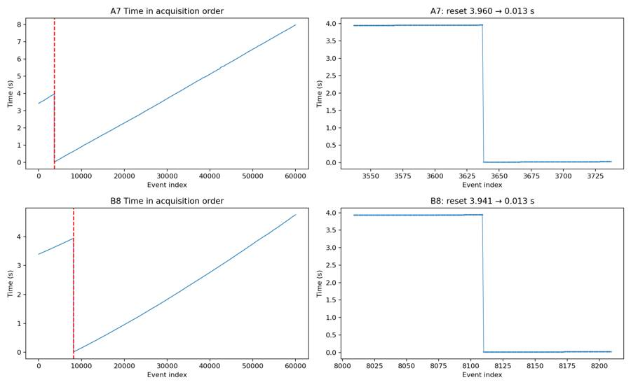
34
agent
All 180 counts passed validation against the saved XML, including an independent check of the full gate ancestry. The QC report flags 12 wells: four for acquisition discontinuities, seven for terminal depletion, and C4 for inseparable GFP/CellEvent signal. C5 and C6 have both depletion and GFP-confounding flags documented.
tool call · exec
text(await tools.exec_command({cmd:"ls -lh /task/outputs; head -12 /task/outputs/counts.csv; head -18 /task/outputs/gates.xml; cat /task/outputs/analysis_status.json","max_output_tokens":5000}));
text(await tools.write_stdin({session_id:63919,chars:"","yield_time_ms":1000,"max_output_tokens":1000}));
tool output
Script completed
Wall time 0.1 seconds
Output:
{"chunk_id":"8dc931","wall_time_seconds":0.000004412,"exit_code":0,"original_token_count":1278,"output":"total 106M\ndrwxr-xr-x 2 root root 4.0K Nov 10 17:21 __pycache__\n-rw-r--r-- 1 root root 126 Nov 10 17:26 analysis_status.json\n-rw-r--r-- 1 root root 4.1K Nov 10 17:21 analyze_plate.py\n-rw-r--r-- 1 root root 2.1K Nov 10 17:20 build_gates.py\n-rw-r--r-- 1 root root 1.2K Nov 10 17:29 clock_reset_qc.json\n-rw-r--r-- 1 root root 130K Nov 10 17:29 clock_reset_review.png\n-rw-r--r-- 1 root root 543K Nov 10 17:28 control_thresholds.png\n-rw-r--r-- 1 root root 17K Nov 10 17:25 counts.csv\n-rw-r--r-- 1 root root 18M Nov 10 17:19 display_subsamples.npz\n-rw-r--r-- 1 root root 111K Nov 10 17:19 fcs_metadata.json\n-rw-r--r-- 1 root root 805K Nov 10 17:33 final_cells_all.png\n-rw-r--r-- 1 root root 378K Nov 10 17:33 final_control_review.png\n-rw-r--r-- 1 root root 742K Nov 10 17:33 final_fluorescence_all.png\n-rw-r--r-- 1 root root 4.2K Nov 10 17:33 final_plots.py\n-rw-r--r-- 1 root root 895K Nov 10 17:33 final_singlets_all.png\n-rw-r--r-- 1 root root 2.4K Nov 10 17:25 fine_flow_qc.py\n-rw-r--r-- 1 root root 13K Nov 10 17:25 fine_flow_summary.csv\n-rw-r--r-- 1 root root 542K Nov 10 17:25 fine_time_qc.csv\n-rw-r--r-- 1 root root 14K Nov 10 17:31 flags.csv\n-rw-r--r-- 1 root root 798K Nov 10 17:28 flow_and_morphology_all.png\n-rw-r--r-- 1 root root 16K Nov 10 17:28 flow_window_summary.csv\n-rw-r--r-- 1 root root 2.9M Nov 10 17:25 fluorescence_histograms.csv\n-rw-r--r-- 1 root root 732 Nov 10 17:25 gate_config.json\n-rw-r--r-- 1 root root 47K Nov 10 17:25 gated_qc.csv\n-rw-r--r-- 1 root root 285K Nov 10 17:25 gated_quantiles.csv\n-rw-r--r-- 1 root root 76M Nov 10 17:26 gated_subsamples.npz\n-rw-r--r-- 1 root root 235K Nov 10 17:25 gated_time_qc.csv\n-rw-r--r-- 1 root root 5.0K Nov 10 17:25 gates.xml\n-rw-r--r-- 1 root root 259K Nov 10 17:19 initial_controls.png\n-rw-r--r-- 1 root root 268K Nov 10 17:19 initial_event_rate_all.png\n-rw-r--r-- 1 root root 468K Nov 10 17:19 initial_fluorescence_all.png\n-rw-r--r-- 1 root root 16K Nov 10 17:19 initial_qc.csv\n-rw-r--r-- 1 root root 501K Nov 10 17:19 initial_scatter_all.png\n-rw-r--r-- 1 root root 426K Nov 10 17:19 initial_singlets_all.png\n-rw-r--r-- 1 root root 3.0K Nov 10 17:23 inspect_flow.py\n-rw-r--r-- 1 root root 4.5K Nov 10 17:19 inspect_plate.py\n-rw-r--r-- 1 root root 5.9K Nov 10 17:31 make_flags.py\n-rw-r--r-- 1 root root 347K Nov 10 17:21 morphology_detail.png\n-rw-r--r-- 1 root root 3.3K Nov 10 17:32 notes.md\n-rw-r--r-- 1 root root 2.4K Nov 10 17:22 plot_controls.py\n-rw-r--r-- 1 root root 1.5K Nov 10 17:21 plot_morphology.py\n-rw-r--r-- 1 root root 6.5K Nov 10 17:31 qc_summary.csv\n-rw-r--r-- 1 root root 95K Nov 10 17:19 raw_quantiles.csv\n-rw-r--r-- 1 root root 762K Nov 10 17:25 terminal_flow_detail.png\n-rw-r--r-- 1 root root 530K Nov 10 17:28 time_phenotypes_detail.png\n-rw-r--r-- 1 root root 127K Nov 10 17:19 time_qc.csv\n-rw-r--r-- 1 root root 4.5K Nov 10 17:32 validate_outputs.py\n-rw-r--r-- 1 root root 8.1K Nov 10 17:32 validation.json\nfile,well,population,count,parent_population,pct_of_parent\nCaspase_KO_RNAswap-rep2_caspase_Group_A1.fcs,A1,Cells,133648,All_events,72.8910898649054\nCaspase_KO_RNAswap-rep2_caspase_Group_A1.fcs,A1,Single_Cells,117210,Cells,87.70052675685382\nCaspase_KO_RNAswap-rep2_caspase_Group_A1.fcs,A1,Live,1861,Single_Cells,1.5877484856240935\nCaspase_KO_RNAswap-rep2_caspase_Group_A1.fcs,A1,Caspase_pos,4,Live,0.21493820526598603\nCaspase_KO_RNAswap-rep2_caspase_Group_A1.fcs,A1,Late_apoptosis,6834,Single_Cells,5.830560532377784\nCaspase_KO_RNAswap-rep2_caspase_Group_A2.fcs,A2,Cells,160730,All_events,72.47598863687604\nCaspase_KO_RNAswap-rep2_caspase_Group_A2.fcs,A2,Single_Cells,135951,Cells,84.5834629502893\nCaspase_KO_RNAswap-rep2_caspase_Group_A2.fcs,A2,Live,6085,Single_Cells,4.475877338158601\nCaspase_KO_RNAswap-rep2_caspase_Group_A2.fcs,A2,Caspase_pos,36,Live,0.5916187345932621\nCaspase_KO_RNAswap-rep2_caspase_Group_A2.fcs,A2,Late_apoptosis,9002,Single_Cells,6.6215033357606785\nCaspase_KO_RNAswap-rep2_caspase_Group_A3.fcs,A3,Cells,167195,All_events,75.12862567121256\n<?xml version='1.0' encoding='UTF-8'?>\n<gating:Gating-ML xmlns:gating=\"http://www.isac-net.org/std/Gating-ML/v2.0/gating\" xmlns:data-type=\"http://www.isac-net.org/std/Gating-ML/v2.0/datatypes\" xmlns:transforms=\"http://www.isac-net.org/std/Gating-ML/v2.0/transformations\">\n <transforms:transformation transforms:id=\"Fluorescence_Logicle\">\n <transforms:logicle transforms:T=\"1048576\" transforms:W=\"0.5\" transforms:M=\"4.5\" transforms:A=\"0\"/>\n </transforms:transformation>\n <gating:PolygonGate gating:id=\"Cells\">\n <gating:dimension gating:compensation-ref=\"uncompensated\">\n <data-type:fcs-dimension data-type:name=\"FSC-A\"/>\n </gating:dimension>\n <gating:dimension gating:compensation-ref=\"uncompensated\">\n <data-type:fcs-dimension data-type:name=\"SSC-A\"/>\n </gating:dimension>\n <gating:vertex>\n <gating:coordinate data-type:value=\"50000\"/>\n <gating:coordinate data-type:value=\"20000\"/>\n </gating:vertex>\n <gating:vertex>\n <gating:coordinate data-type:value=\"200000\"/>\n{\n \"flowkit_version\": \"1.2.3\",\n \"files\": 36,\n \"counts_rows\": 180,\n \"strategy_source\": \"gates.xml\",\n \"full_events\": true\n}"}
{"chunk_id":"73c83e","wall_time_seconds":0.000003184,"exit_code":0,"original_token_count":0,"output":""}tool call · exec
text(await tools.exec_command({cmd:"python - <<'PY'\nimport flowkit as fk,pandas as pd,numpy as np\nx=fk.parse_gating_xml('/task/outputs/gates.xml');g=x.get_gate('Late_apoptosis',('root','Cells','Single_Cells'));tr=x.get_transform('Fluorescence_Logicle')\na=np.array([[2200,3000],[2200,10000],[10000,3000],[2199,10000],[10000,2999],[2201,3001]],float)\nprint(pd.DataFrame({'BL1-A':a[:,0],'RL3-A':a[:,1],'late_polygon_included':g.apply(pd.DataFrame(tr.apply(a),columns=['BL1-A','RL3-A']))}).to_string(index=False))\nPY","max_output_tokens":1000}));
const results = await Promise.allSettled([
tools.view_image({path:"/task/outputs/final_cells_all.png"}),
tools.view_image({path:"/task/outputs/final_singlets_all.png"})
]); for(const r of results){ if(r.status==="fulfilled")image(r.value.image_url);else text(r);}
tool output
Script completed Wall time 1.3 seconds Output:
{"chunk_id":"8cdddf","wall_time_seconds":1.020538244,"exit_code":0,"original_token_count":69,"output":" BL1-A RL3-A late_polygon_included\n 2200.0 3000.0 True\n 2200.0 10000.0 True\n10000.0 3000.0 True\n 2199.0 10000.0 False\n10000.0 2999.0 False\n 2201.0 3001.0 True\n"}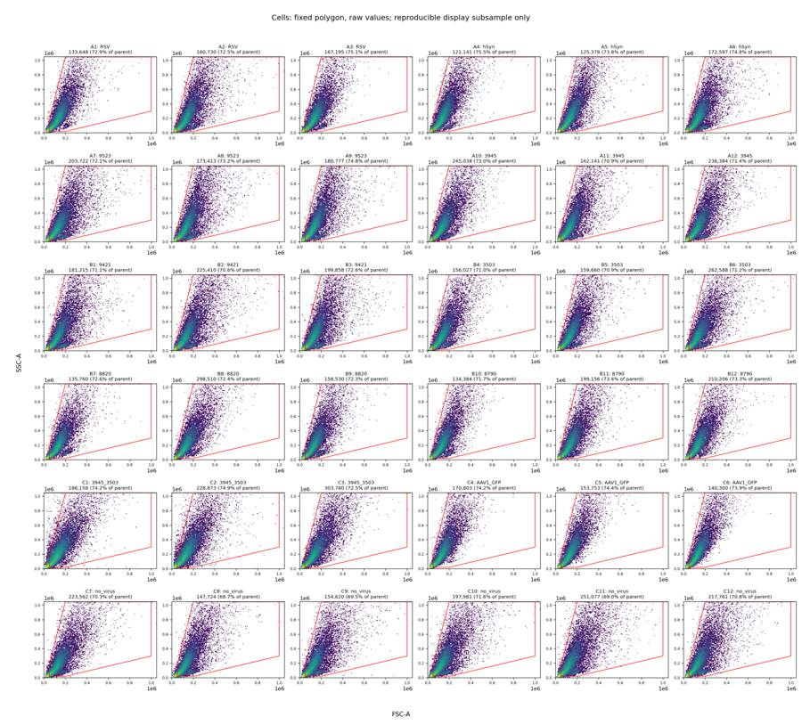
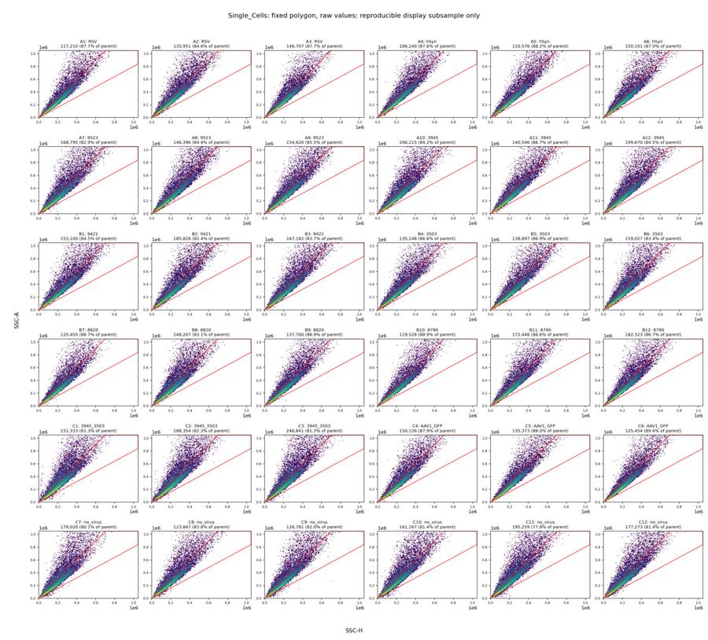
tool call · exec
text(await tools.exec_command({cmd:"cat > /task/outputs/README.md <<'MD'\nThe requested deliverables are `gates.xml`, `counts.csv`, `flags.csv`, and `notes.md`.\n\n`validation.json` records successful verification of all 9,379,064 events: XML reload, five gate names and shapes, uncompensated dimensions, complete ancestor membership, every CSV count and parent percentage, row order, and QC schema.\n\nTo regenerate the fixed gates and counts with FlowKit 1.2.3:\n\n```bash\npython /task/outputs/build_gates.py\npython /task/outputs/analyze_plate.py\npython /task/outputs/validate_outputs.py\n```\n\n`gate_config.json` contains the final raw coordinates and logicle parameters. `flags.csv` and `notes.md` record the scientific QC decisions and interpretation limits.\n\nReview `final_control_review.png`, `control_thresholds.png`, and `final_*_all.png` for the gates; `terminal_flow_detail.png`, `clock_reset_review.png`, and `flow_and_morphology_all.png` for acquisition QC. `qc_summary.csv` provides one compact numeric QC row per well. Other CSVs and scripts contain the supporting measurements and plotting workflow. Display subsamples are reproducible from fixed seeds; counts always use all events. Large temporary display caches were removed after plotting and regenerate when the corresponding analysis scripts run.\nMD\npython - <<'PY'\nfrom pathlib import Path\nimport hashlib,json,shutil\np=Path('/task/outputs')\nfor name in ['display_subsamples.npz','gated_subsamples.npz','morphology_detail.png']:\n (p/name).unlink(missing_ok=True)\nfor f in p.glob('initial_*.png'):\n f.unlink()\nif (p/'__pycache__').exists():shutil.rmtree(p/'__pycache__')\nv=json.loads((p/'validation.json').read_text())\nfor name,digest in v['files_sha256'].items():\n assert hashlib.sha256((p/name).read_bytes()).hexdigest()==digest, name\nprint('Required outputs unchanged since full validation. All hashes match.')\nprint('Required output sizes:', {name:(p/name).stat().st_size for name in ['gates.xml','counts.csv','flags.csv','notes.md']})\nprint('Total output size MB:',round(sum(f.stat().st_size for f in p.rglob('*') if f.is_file())/1e6,2))\nPY","max_output_tokens":1500}));
text(await tools.clock__curr_time({}));
tool output
Script completed
Wall time 0.1 seconds
Output:
{"chunk_id":"63af55","wall_time_seconds":0.000005238,"exit_code":0,"original_token_count":50,"output":"Required outputs unchanged since full validation. All hashes match.\nRequired output sizes: {'gates.xml': 5066, 'counts.csv': 16643, 'flags.csv': 13536, 'notes.md': 3339}\nTotal output size MB: 10.33\n"}
{"current_time":"2026-11-10 17:36:06 UTC"}37
agent
Completed and validated all 36 wells with one shared gate set.
- [gates.xml](/task/outputs/gates.xml) — reloadable GatingML
- [counts.csv](/task/outputs/counts.csv) — 180 population counts
- [flags.csv](/task/outputs/flags.csv) — 36 QC decisions; 12 wells flagged
- [notes.md](/task/outputs/notes.md) — gate placement and limitations
Counts include flagged wells. GFP-well caspase counts are explicitly marked as confounded.